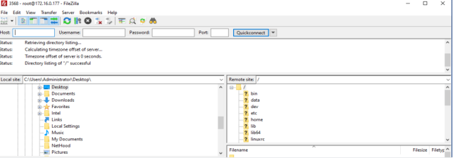
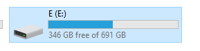
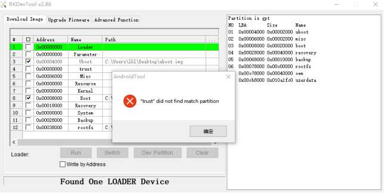
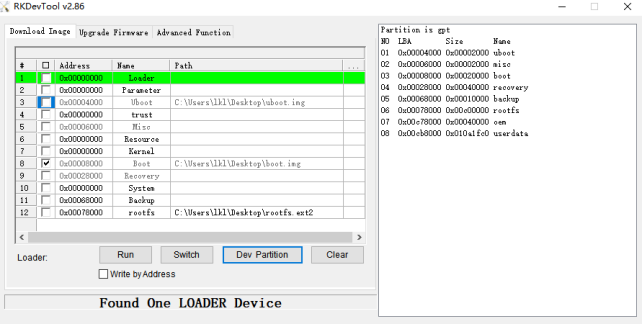

00_OK3568-C_Linux5.10.160+QT5.15.8用户使用手册
免责声明
本手册版权归保定飞凌嵌入式技术有限公司所有。未经本公司的书面许可，任何单位和个人无权以任何形式复制、传播、转载本手册的任何部分，违者将被追究法律责任。
保定飞凌嵌入式有限公司所提供的所有服务内容旨在协助用户加速产品的研发进度，在服务过程中所提供的任何程序、文档、测试结果、方案、支持等资料和信息，都仅供参考，用户有权不使用或自行参考修改，本公司不提供任何的完整性、可靠性等保证，若在用户使用过程中因任何原因造成的特别的、偶然的或间接的损失，本公司不承担任何责任。
概述
OK3568-C/C2C开发板目前提供了Linux操作系统的软件资料，本文为Linux软件手册，针对Linux5.10.160内核进行相关功能测试和说明，用户要选择与开发板中的镜像一致的资料进行操作。用户可通过本公司提供的网盘链接获取软件和硬件的文档及源码。资料下载网站为：http://bbs.witech.com.cn/forum.php?mod=forumdisplay&fid=130 ，用户需要通过销售获取下载权限，方可自行下载。
注意：
OK3568-C/C2C开发板出厂默认烧写的为Linux镜像，用户在进行操作前确认是否为Linux系统，若不是需要重新烧写Linux的镜像，烧写方法参考“烧写系统”，烧录完成后可通过“串****口登录”中步骤查看内核版本信息
详细资料参看OK3568-C/C2C用户资料,本文中提到用户资料的所在目录以OK3568-C/C2C用户资料为根目录。
更新记录
日期 |
手册版本 |
更新内容 |
|---|---|---|
20231124 |
V1.0 |
OK3568-C Linux5.10.160+QT5.15.8用户使用手册初版。 |
20231211 |
V1.1 |
1去掉FTP 的forlinx用户，文件系统暂时未添加。 2视频硬编码，RGA 只支持0-4G，增加说明。 |
20240515 |
V2.0 |
1新增FET3568-C2、OK3568-C2C配置。 2修正手册勘误。 |
20250704 |
V2.1 |
4.2.22 休眠唤醒测试章节添加长鑫内存已将休眠唤醒功能去掉内容。 |
20251015 |
V2.2 |
WIFI测试章节和快速启动章节添加注意项，启动必须接入天线，否则有可能影响启动 |
01_OK3568开发板介绍
1.1 OK3568-C/C2C开发板简介
RK3568 是基于ARM64架构的低功耗高性能处理器，它包括4 核Cortex-A55以及独立的 NEON 协处理器和神经网络加上处理器NPU，可应用于计算机、手机、个人移动互联网，数字多媒体设备。
FET3568-C和FET3568-C2核心板引脚定义相同，可共用一块底板，当FET3568-C与OK3568-C底板组合时，开发板名称为OK3568-C开发板；当FET3568-C2与OK3568-C底板组合时，则开发板名称为OK3568-C2C开发板。
飞凌OK3568-C/C2C开发平台核心板和底板采用接插件的连接方式，主要接口如下图所示：
OK3568-C底板接口正面视图

OK3568-C底板接口反面视图
📚 请阅读：
本软件手册中不再对硬件参数进行叙述，在参考本手册进行软件开发前请阅读“硬件资料\用户手册”路径下的“OK3568-C&OK3568-C2C_硬件手册”，以了解产品命名规则和您所使用产品的硬件配置信息，这样有助于您对本产品的使用。
1.2 Linux 5.10.160系统软件资源特性
设备 |
驱动程序源代码在内核中的位置 |
设备名 |
|---|---|---|
LCD 背光驱动 |
drivers/video/backlight/pwm_bl.c |
/sys/class/backlight |
USB接口U盘 |
drivers/usb/storage/ |
|
USB鼠标 |
drivers/hid/usbhid/ |
/dev/input/mice |
以太网 |
drivers/net/ethernet/stmicro/stmmac |
|
SD/micro TF卡驱动 |
drivers/mmc/host/dw_mmc-rockchip.c |
/dev/block/mmcblk1pX |
EMMC驱动 |
drivers/mmc/host/dw_mmc-rockchip.c |
/dev/block/mmcblk2pX |
OV13850 |
drivers/media/i2c/ov13850.c |
/dev/videoX |
LCD 控制器 |
drivers/gpu/drm/rockchip/rockchip_drm_vop.c |
|
MIPI CSI |
drivers/phy/rockchip/phy-rockchip-mipi-rx.c |
|
MIPI DSI |
drivers/phy/rockchip/phy-rockchip-inno-mipi-dphy.c |
|
LCD触摸驱动 |
drivers/input/touchscreen/gt9xx/* |
/dev/input/eventX |
RTC实时时钟驱动 |
drivers/rtc/rtc-rx8010.c |
/dev/rtc0 |
串口 |
drivers/tty/serial/8250/8250_dw.c |
/dev/ttySX |
按键驱动 |
drivers/input/keyboard/adc-keys.c |
/dev/input/eventX |
LED |
drivers/leds/leds-gpio.c |
|
I2S |
sound/soc/rockchip/rockchip_i2s.c |
|
音频驱动 |
sound/soc/codecs/rk817_codec.c |
/dev/snd/ |
PMIC |
drivers/mfd/rk808.c |
|
PCIE |
drivers/pci/controller/pcie-rockchip.c |
|
看门狗 |
drivers/watchdog/dw_wdt.c |
|
SPI |
drivers/spi/spi-rockchip.c |
1.3 eMMC存储器分区表
下面表格是Linux操作系统的eMMC存储器分区信息（计算时一个块大小为512bit）：
分区索引 |
名称 |
偏移/block |
大小/block |
内容 |
|---|---|---|---|---|
N/A |
loader |
0x00000000 |
0x00003fc0 |
MiniLoaderAll.bin |
1 |
uboot |
0x00004000 |
0x00002000 |
uboot.img |
2 |
misc |
0x00006000 |
0x00002000 |
misc.img |
3 |
boot |
0x00008000 |
0x00020000 |
boot.img |
4 |
recovery |
0x00028000 |
0x00040000 |
recovery.img |
5 |
backup |
0x00068000 |
0x00010000 |
backup.img |
6 |
rootfs |
0x00078000 |
0x00c00000 |
rootfs.img |
7 |
oem |
0x00c78000 |
0x00040000 |
oem.img |
8 |
userdata |
0x00cb8000 |
剩余全部 |
userdata.img |
可在开发板中使用fdisk -l命令查看分区大小：
root@OK3568-buildroot:/# fdisk –l
Found valid GPT with protective MBR; using GPT
Disk /dev/mmcblk0: 15269888 sectors, 3360M
Logical sector size: 512
Disk identifier (GUID): b0640000-0000-493c-8000-1e08000019fe
Partition table holds up to 128 entries
First usable sector is 34, last usable sector is 15269854
Number Start (sector) End (sector) Size Name
1 16384 24575 4096K uboot
2 24576 32767 4096K misc
3 32768 163839 64.0M boot
4 163840 425983 128M recovery
5 425984 491519 32.0M backup
6 491520 13074431 6144M rootfs
7 13074432 13336575 128M oem
8 13336576 15269854 943M userdata
02_快速开机启动
2.1 开机前准备
12V2A或者12V3A DC电源线
调试串口线
⚠️ 注意：开机务必安装好Wifi天线

2.2 调试串口驱动安装
OK3568-C平台调试串口使用的是Type-C接口，板载USB转UART芯片，无需客户购买USB转串口调试工具，使用极其简单方便。
安装驱动请使用用户资料\Linux\工具\目录下提供的驱动包CP210x_VCP_Windows_XP_Vista.zip进行安装。
解压完成后32位操作系统选择运行CP210xVCPInstaller_x86.exe，64位操作系统选择运行CP210xVCPInstaller_x64.exe即可。
2.3 串口登录
2.3.1 串口连接设置
📚 说明：
串口****终端登陆用户：串口终端自动登录root用户，密码root。
串口设置：波特率115200、数据位8、停止位1、无校验位、无流控制。
硬件需求：需要Type-C线连接PC和开发板
软件需求：PC端Windows系统需要安装超级终端软件，超级终端软件有多种，可自行使用自己熟悉的串口终端软件；
以下我们以putty终端软件为例介绍串口的登录方式：
**步骤1：**首先需要确认连接电脑的串口端口号，从设备管理器中查看串口端口号，以电脑实际识别的端口号为准。

**步骤2：**打开putty并设置，serial line根据使用的电脑COM口设置，波特率115200。
**步骤3：**上述设置完成后可以在Saved Sessions输入电脑使用的COM口，下图以COM24为例，将设置保存，之后再打开串口时，直接点击保存的端口号即可。
2.3.2 串口登录
PC端终端软件设置好后，通过串口线连接PC机和开发板，接好电源后开机上电。可以通过终端软件看到启动信息。
启动信息如下表示启动成功，可以输入回车新建命令行：

⁉️**注意：**如果是[root@buildroot]#则是第一次烧写完成后第一次重启，在写入一些信息，这时不要进行操作，等它自行再次重启才算是烧写完成。[root@OK3568-buildroot]#才是正常状态。可通过uboot启动信息进行查看。
第一次启动，recovery 模式：

正常启动：
2.4 网络登录
OK3568除了使用调试串口登录以外，支持SSH网络方式登录开发板，同时支持FTP文件传输。下面**以开发板IP为172.16.0.76为例**，介绍网络工具的使用。修改网络IP可通过ifconfig eth0 172.16.0.76实现，然后将开发板和PC接在同一交换机上或者直接通过网线直连。
2.4.1 SSH
OK3568开发板支持 SSH 服务并启动时已自动开启，设置好 IP 地址后就可以作为一台 SSH 服务器。可以利用SSH登录开发板进行开发调试，也可用scp进行文件传输。
⁉️注意：登录时根据提示输入用户名root密码root。若想通过SSH登录root用户，则需要先给root用户设置登陆密码，先使用串口登录开发板，使用passwd “用户名”来更改对应用户的登陆密码。会有密码强弱提示，可以无视，对密码修改没有影响。
⁉️注意：以下以开发板ip 172.16.0.76进行测试，请根据实际情况进行修改，在调试串口终端使用ifconfig eth0 172.16.0.76进行更改

在打开putty软件进行如下设置（IP以实际为准）：

2.4.2 FTP
OK3568开发板支持 FTP 服务并启动时已自动开启，设置好 IP 地址后就可以作为一台 FTP 服务器。下面介绍如何利用FTP工具进行文件传输。
路径：OK3568-C（Linux）用户资料\工具\FileZilla*
在 windows上安装好filezilla工具，并按照下图所示步骤进行设置。
注意：此功能需要给开发板连接网线，主机IP设置和客户端处于同一网段，确保主机与客户端在同一局域网内，**用户名root，密码root,**登录成功后便可以对文件系统任意位置上传下载删除。一般情况不建议使用root登录ftp，请根据实际情况设置用户登录。
注意：以下以开发板ip 172.16.0.76进行测试，请根据实际情况进行修改，在调试串口终端使用ifconfig eth0 172.16.0.76进行更改

2.5屏幕切换
OK3568支持LVDS/LCD、MIPI DSI/eDP、HDMI等多种屏幕接口，同时可以进行三个屏幕的同显和异显。目前屏幕切换控制方式有三种：uboot菜单动态控制；内核设备树指定，qt应用ubootmenu控制。
⁉️注意：屏幕切换涉及到触摸切换，出厂镜像默认LVDS、MIPI、HDMI三个接口都输出视频画面，默认触摸位于LVDS屏，使用MIPI触摸请在选屏阶段将LVDS屏幕输出关闭。
2.5.1 uboot菜单动态控制
该方式在现有已支持屏幕的基础上不需要重新编译和烧写，即可切换屏幕。
在uboot自启动过程中串口终端按下ctrl+c，即可弹出控制选项：
Hit key to stop autoboot('CTRL+C'): 0
---------------------------------------------
0:Exit to console
1:Reboot
2:Display type
---------------------------------------------
终端输入2，进入屏幕控制子菜单：
---------------------------------------------
hdmi==>off mipi_edp==>off lvds_rgb=>off
Select display
0:Exit
1:hdmi display off
2:mipi_edp display off
3:lvds_rgb display off
---------------------------------------------
其中可以选择HDMI、MIPI-DSI、eDP、Lvds四种类型的屏幕。对选项按下可切换是否开启，MIPI-DSI和eDP在选项2处切换选择。选项参数信息表如下：
终端输入 |
屏幕选择参数 |
参数对应含义 |
|---|---|---|
0 |
Exit |
返回上一级菜单 |
1 |
hdmi display off |
打开HDMI屏幕信号输出 |
2 |
mipi_edp display off |
打开MIPI-DSI/eDP屏幕信号输出 |
3 |
lvds_rgb display off |
打开LVDS屏幕信号输出 |
以下以打开eDP屏幕为例，按下数字2，打印信息变化：
---------------------------------------------
hdmi==>off mipi_edp==>mipi lvds_rgb=>off
Select display
0:Exit
1:hdmi display off
2:mipi_edp display mipi
3:lvds display off
---------------------------------------------
可见上述加粗字体切换为mipi屏幕信号输出，再次按下数字2，打印信息变化：
---------------------------------------------
hdmi==>off mipi_edp==>edp lvds_rgb=>off
Select display
0:Exit
1:hdmi display off
2:mipi_edp display edp
3:lvds display off
---------------------------------------------
可见上述加粗字体切换为eDP屏幕信号输出，选择完成后，按照菜单提示选项退出进行重启，按下数字0打印信息变化：
---------------------------------------------
0:Exit to console
1:Reboot
2:Display type
---------------------------------------------
按下数字1，执行重启操作，uboot阶段操作的屏幕选项重启后生效。
屏幕选择完成后也可按下开发板复位键重新启动，自启动后生效。
2.5.2 内核设备树指定
该方式不需要连接串口终端，系统镜像默认为所期望的配置选择，适合量产。但需要手工修改设备树，重新生成一次系统镜像。
⁉️注意：该方式优先级高于uboot屏幕选择，在设备树修改后，uboot的选择不会生效。
设备树路径为：kernel/arch/arm64/boot/dts/rockchip/OK3568-C-common.dtsi
内核源码中，打开设备dtsi文件，找到如下节点：
该节点默认disabled状态，需要改为okay使能节点。根据屏幕需求更改。
举例:
将hdmi、lvds屏幕关闭，属性更改为”off”,使用edp将对应属性修改为edp即可。
保存后，重新编译生成镜像。
对于MIPI屏幕种类多，可能现有时序和控制字不能满足要求，需要自行更改dsi节点下的display-timings。但任何和显示相关的节点status属性，均按照默认处理，程序会自动控制。
2.6系统关闭
一般情况下直接关闭电源即可，如果有数据存储、功能使用等操作，操作过程中不要随意断电，以防出现文件不可逆损坏，只能重新烧写固件。未确保数据完全写入，可输入 sync 命令完成数据同步后再关闭电源。
⁉️注意：用户依据核心板设计的产品，若在使用中存在意外掉电导致系统异常关闭的情景，可在设计中加入掉电保护等措施。
03_OK3568平台功能测试
OK3568平台对Qt的支持非常完善，特别是多媒体相关的类，例如视频解码播放、摄像头、视频录制等，均能结合硬件编解码以及OpenGL达到最佳效果。
3.1界面功能测试
3.1.1 界面功能简介
开发板启动后桌面显示如下：

3.1.2 触摸功能简介
开发板连接LVDS和MIPI屏幕可以正常显示和触摸，如果需要关闭一个显示触摸，请参考手册2.5.1 uboot菜单动态控制章节，将对应的显示输出关闭掉。
3.1.3 硬件解码体验
点击桌面图标进入打开视频播放器video player。

应用图标
应用界面
3.1.4 Camera测试
点击桌面图标进入打开视频播放器qcamera，该测试程序支持USB Camera也支持OV13850。插入USB Camera，这里以RMONCAM 720P为例。
注意：该应用需要连接摄像头后再打开。

应用图标
应用界面
打开应用后点击UVC Carmera，即可启动摄像头预览。
Video Mode模式下可以点击record按钮进行录像操作，点击recording按钮即可停止录像，生成的视频文件位于/userdata/VIDEO0.MOV
可以使用gst-play-1.0 /userdata/VIDEO0.mov 命令进行播放测试。
点击Video Mode按钮，可以切换到拍照模式，点击Capture可以进行拍照操作。
生成的文件位在/userdata路径下：

对于OV13850 等raw sensor，每一个sensor对应5个设备节点：
Mainpath,指 Rockchip ISP的一个输出节点，可输出全分辨率图像，一般用来拍照，抓取 Raw 图。
Self Path,指 Rockchip ISP的一个输出节点，最高只能输出1080p分辨率，一般用作预览。
Statistics，用于3A 统计。
Input-params，用于3A 参数设置。
3.1.5 OpenGL测试
OK3568支持OpenGL ES3.2，点击桌面图标进行OpenGL测试。

应用图标

应用界面
3.1.6 播放音乐测试
“musicplayer”是一款简单的音频测试应用，可用来测试声卡功能是否正常，也可用来作为一款简单的音频播放器。

应用图标

应用界面
点击左下角的按钮，选择测试音频 /userdata/media/test.mp3
注意：默认声卡输出为rk809输出，若要使用HDMI输出请在串口使用命令：
root@OK3568-buildroot:/# gst-play-1.0/userdata/media/test.mp3 --audiosink="alsasink device=hw:1,0"
3.1.7 录音测试
“Audiorecorder”是录音测试应用，可用来测试声卡录音功能是否正常：

应用图标
应用界面
点击下拉菜单选择输入设备和音频格式、音频通道，点击output file dir文本框输入录音文件的输出路径及名称，File Container选择audio/ogg， Channels选择通道数1，其余设置默认即可，点击Record开始录音。录制的音频文件可以使用gst-play-1.0进行播放。
点击Exit可退出本测试。
3.1.8 4G/5G测试
注意：此测试需要插入可上网的SIM卡，具体操作描述可以参考本手册的命令行功能测试 5G章节。
“4G/5G”测试程序用于测试OK3568外置5G模块(RM500U)。测试前请将开发板断电，接入5G模块，插入SIM卡，启动开发板打开测试应用。
同时该测试支持4G模组（EM05-CE），在断电情况下插入4G模组和SIM卡，上电系统启动后打开测试应用。
应用图标

应用界面
点击connect按钮，程序将自动进入拨号流程并获取IP设置DNS等，耐心等待几秒钟后，点击ping按钮进行测试。
3.1.9 WIFI测试
“WIFI”是一款配置wifi的工具，OK3568平台默认板载AW-CM358模块。wifi模块在系统中会以mlan结点的形式存在，此测试对应mlan0（多设备时使用其它对应节点）：
⚠️** 注意：开机务必安装好Wifi天线**
应用图标

应用界面
选中mlan0，在SSID栏中输入需要使用wifi连接的路由器名称，PAWD栏输入路由器密码，点击connect，即可通过wifi连接路由器，在IP栏中输入有效ip后，点击ping，可查看当前使用wifi网络是否畅通。
默认情况下OK3568底板焊接了AW-CM358模块，只有mlan0节点，以mlan0为例演示wifi工具的使用。
打开Wifi测试应用，输入正确的网络名称及密码，点击connect，等待5秒后点击status查看连接窗台。
连接成功后可点击ping进行网络测试

3.1.10 网络配置测试
OK3568启动时网卡默认设置为dhcp，可通过“Network”网络配置应用来选择 dhcp和static两种模式，static模式可配置ip地址、子网掩码、网关、DNS。

应用图标
界面如下：

选中eth0或者eth1，再选中DHCP，点击界面下方“应用”，即可重启网络并自动获取到ip。
点击STATIC，选择设置静态IP，在ip栏中输入要设定的ip，netmask栏中输入子网掩码，geteway栏中输入网关，dns栏中输入DNS。
输入网址，点击ping键后，左侧提示框中会提示ping的结果，如下：

注：在STATIC模式下设置的ip等信息会被保存至系统的相关配置文件中，因此每次重启都会使用本次设置的网络信息；而在DHCP模式下配置的网络信息则不需注意这一点，每次重新启动都会动态分配一次ip地址。
3.1.11 浏览器测试
“simplebrowser”是一款简单实用的网络浏览器，在使用时请保证网络通畅，访问外网前需保证dns可用，浏览器启动时默认访问飞凌嵌入式官方网站，点击图标：
界面如下：
注意：如果开发板的时间异常会导致证书问题。使用浏览器后不可以立即关闭电源或者在关闭电源前在命令行使用sync命令，否则可能导致浏览器异常退出，无法正常运行，只能重新烧录解决。
通过上方导航栏File->Quit退出该浏览器。
3.1.12 看门狗测试
“WatchDog”是用来测试看门狗功能是否正常的应用
应用图标

应用界面
点击start，默认打开喂狗功能，定时喂狗，此时系统不会重启。
取消勾选feed dog时，倒计时6s，系统进入重启。说明看门狗功能正常。
3.1.13 按键测试
“Keypad”用于测试平台自带按键是否可用：

应用图标

应用界面
OK3568平台默认将4个物理按键V+、V-、Home、ESC分别配置为音量+键、音量-键，Home、返回键。当按下按键时测试应用中的对应按键会变为蓝色，说明按键功能正常。
按“X”退出当前例程，返回到系统桌面。
3.1.14 RTC测试
通过“RTC”应用，可查看和设置当前的系统时间：
应用图标

应用界面
选择Manual 之后，可手动设置时间，选择date和time，点击apply，设置完成，安装好RTC备用电池的情况下，时间断电重启不丢失。
点击 Auto，网络对时，点击apply，对时成功。
3.1.15 SPI测试
点击桌面图标可以使用它来测试OK3568板载SPI接口。spi0具有一个cs接口，对应/dev/spidev0.0；spi2具有两个cs，分别对应/dev/spidev2.0，/dev/spidev2.1。
根据开发板原理图，短接spi2收发引脚。短接测试不需要考虑cs接口；如果外加设备通信，需要考虑对应的dev接口。
应用图标

短接完成后打开测试程序，点击send按钮，进行收发测试。
应用界面

点击Exit按钮退出该测试。
3.1.16 UART测试
点击桌面图标可以使用它来测试OK3568板载UART接口。
应用图标
OK3568 串口支持奇、偶校验，8 位数据位和1 位停止位。
在进行串口回环测试前，请先将需要测试的串口短接。OK3568平台底板原理图中标示引出的UART3、UART4、UART5、UART8共4路串口，其中UART2为调试串口，UART8为蓝牙串口。UART3和UART4、UART5在开发板中的默认设备名称分别为ttyS3、ttyS4，ttyS5在此以测试UART4串口为例，按照开发板原理图短接UART4的收发引脚，分别对应PIN29,PIN30。

短接完成后打开测试程序。
点击右侧设置，选择串口与波特率等参数，点击apply。设置参数成功。再单击右侧第一个按钮进行连接。

应用界面
点击键盘”1”自动发送，由于短接的问题，回将收到的“1”也显示在终端上。

3.1.17 背光测试
“BackLight”是lcd背光调整应用：

应用图标
应用界面
拖动界面中的滑块即可设置Lcd背光亮度，0级为无背光，255级为最高亮度。
3.1.18 CPU频率配置测试
点击桌面图标进入下一级菜单：
 ->
->
应用图标
OK3568 CPU主频最大1.9Ghz，默认情况下CPU会根据负载动态调整主频，也可以通过设置固定CPU主频率。
点击桌面 Power 图标进入CPU主频设置页面：
Set Userspace Governor：用户态设置主频
Set Frequency A55：设置主频
以设置主频频率为例，如果需要设置固定频率，请先点击Set Userspace Governor，点击run，再返回上图操作界面，点击Set Frequency A55进行设置。

根据需求选择对应的频率进行设置。
04_OK3568命令行功能测试
4.2 命令行功能测试
OK3568平台内置了丰富的命令行工具可供用户使用。
4.2.1 系统信息查询
查看内核和cpu信息：
root@OK3568-buildroot:/# uname -a
Linux OK3568-buildroot 5.10.160 #1 SMP Fri Oct 13 08:48:42 HKT 2023 aarch64 GNU/Linux
查看操作系统信息：
root@OK3568-buildroot:/# cat /etc/issue
Welcome to RK3566_RK3568 Buildroot
查看环境变量信息
root@OK3568-buildroot:/# env
SHELL=/bin/bash
GST_V4L2_PREFERRED_FOURCC=NV12:YU12:NV16:YUY2
GST_VIDEO_CONVERT_PREFERRED_FORMAT=NV12:NV16:I420:YUY2
SEATD_VTBOUND=0
PIXMAN_USE_RGA=1
UMS_RO=0
CHROMIUM_FLAGS=--enable-wayland-ime
GST_V4L2_USE_LIBV4L2=1
UMS_MOUNTPOINT=/mnt/ums
GST_INSPECT_NO_COLORS=1
UMS_MOUNT=0
PULSE_HOME=/userdata/.pulse
QT_GSTREAMER_WINDOW_VIDEOSINK=waylandsink
EDITOR=/bin/vi
GST_DEBUG_NO_COLOR=1
PWD=/
LOGNAME=root
PREFERED_VIDEOSINK=waylandsink
UMS_SIZE=256M
HOME=/root
LANG=en_US.UTF-8
ADB_TCP_PORT=5555
WESTON_FREEZE_DISPLAY=/tmp/.freeze_weston
QT_GSTREAMER_WIDGET_VIDEOSINK=waylandsink
WAYLANDSINK_FORCE_DMABUF=1
GST_V4L2SRC_DEFAULT_DEVICE=/dev/video-camera0
TERM=vt100
USER=root
UMS_FILE=/userdata/ums_shared.img
AUTOAUDIOSINK_PREFERRED=pulsesink
ADBD_SHELL=/bin/bash
GST_V4L2SRC_RK_DEVICES=_mainpath:_selfpath:_bypass:_scale
WESTON_DRM_MIRROR=1
UMS_FSTYPE=vfat
SHLVL=1
GST_VIDEO_FLIP_USE_RGA=1
USB_FUNCS=adb
QT_GSTREAMER_PLAYBIN=playbin3
WESTON_DISABLE_ATOMIC=1
XDG_RUNTIME_DIR=/var/run
PLAYBIN2_PREFERRED_AUDIOSINK=pulsesink
GST_VIDEO_CONVERT_USE_RGA=1
PATH=/usr/bin:/usr/sbin
QTWEBENGINE_CHROMIUM_FLAGS=--no-sandbox --disable-es3-gl-context --ignore-gpu-blacklist --ignore-gpu-blocklist --enable-accelerated-video-decode
GST_V4L2SRC_MAX_RESOLUTION=3840x2160
_=/usr/bin/env
OLDPWD=/root
4.2.2 调频测试
说明：此过程以cpu0为例操作，实际过程cpu1、cpu2、cpu3会同时改变。
1、当前内核中支持的所有cpufreq governor类型：
root@OK3568-buildroot:/# cat /sys/devices/system/cpu/cpu0/cpufreq/scaling_available_governors
conservative ondemand userspace powersave interactive performance
其中userspace表示用户模式，在此模式下允许其他用户程序调节CPU频率。
2、查看当前CPU支持的频率档位
root@OK3568-buildroot:/# cat /sys/devices/system/cpu/cpu0/cpufreq/scaling_available_frequencies
408000 600000 816000 1104000 1416000 1608000 1800000 1992000
3、设置为用户模式，修改频率为1800000：
root@OK3568-buildroot:/# echo userspace > /sys/devices/system/cpu/cpu0/cpufreq/scaling_governor
root@OK3568-buildroot:/# echo 1800000 > /sys/devices/system/cpu/cpu0/cpufreq/scaling_setspeed
查看修改后当前频率：
root@OK3568-buildroot:/# cat /sys/devices/system/cpu/cpu0/cpufreq/cpuinfo_cur_freq
1800000
4.2.3 温度测试
查看温度值：
root@OK3568-buildroot:/# cat /sys/class/thermal/thermal_zone0/temp
56111
温度值即为56℃。
4.2.4 DDR带宽测试
root@OK3568-buildroot:/# memory_bandwidth.sh
以下以OK3568-C为例，打印信息如下：

OK3568-C的DDR4写带宽大约1480M/s，读带宽大约5100M/s。
4.2.5 按键测试

使用keytest命令行工具进行按键测试，目前keytest支持底板上四个按键V+、V-、Home、ESC的测试，键码分别为115、114、139、158。此时依次按下抬起按键，终端上可输出如下内容：
执行如下命令：
root@OK3568-buildroot:/# fltest_keytest
Available devices:
/dev/input/event2: adc-keys
key115 Presse
key115 Released
key114 Presse
key114 Released
key139 Presse
key139 Released
key158 Presse
key158 Released
4.2.6 串口测试
OK3568 串口支持奇、偶校验，8 位数据位和1 位停止位。
在进行串口回环测试前，请先将需要测试的串口短接。OK3568平台底板原理图中标示引出的UART2、UART3、UART4、UART5、UART8共5路串口，其中UART2为调试串口，UART8为蓝牙串口。用户可用串口分别为UART3和UART4、UART5，在开发板中对应设备名称分别为ttyS3、ttyS4，ttyS5。在此以测试UART4串口为例，按照开发板原理图短接UART4的收发引脚，分别对应PIN29,PIN30。

短接完成后打开测试程序。
root@OK3568-buildroot:/# fltest_uarttest -d /dev/ttyS4
Welcome to uart test
Send test data:
forlinx_uart_test.1234567890...
Read Test Data finished,Read:
forlinx_uart_test.1234567890...
执行后串口打印如上内容，则说明串口通信基本正常。
4.2.7 SPI 测试
OK3568底板上引出2路SPI接口，默认软件上将其配置为spidev用于回环测试。测试时，请参考原理图短接 MOSI (PIN15)与MISO (PIN16)，然后分别使用下面的命令进行测试。
未短接 SPI2_MOSI 与 SPI2_MISO，执行测试指令：
root@OK3568-buildroot:/# fltest_spidev_test -D /dev/spidev2.0
spi mode: 0x0
bits per word: 8
max speed: 500000 Hz (500 KHz)
FF FF FF FF FF FF
FF FF FF FF FF FF
FF FF FF FF FF FF
FF FF FF FF FF FF
FF FF FF FF FF FF
FF FF FF FF FF FF
FF FF
短接 SPI2_MOSI 与 SPI2_MISO，执行测试指令：
root@OK3568-buildroot:/# fltest_spidev_test -D /dev/spidev2.0
spi mode: 0x0
bits per word: 8
max speed: 500000 Hz (500 KHz)
FF FF FF FF FF FF
40 00 00 00 00 95
FF FF FF FF FF FF
FF FF FF FF FF FF
FF FF FF FF FF FF
DE AD BE EF BA AD
F0 0D
4.2.8 看门狗测试
看门狗是嵌入式系统中经常用到的功能，OK3568中看门狗的设备结点为/dev/watchdog。本测试提供了两种测试程序，用户根据实际情况选择其中一种进行测试。
4.2.8.1 启动 fltest_watchdog，设置符为时间10s，并定时喂狗。
root@OK3568-buildroot:/# fltest_watchdog
Watchdog Ticking Away!
此命令会打开看门狗并执行喂狗操作，因此系统不会重启。
⁉️注意：使用ctrl+c结束测试程序时，10s后系统会复位，如不想复位请在ctrl+c之后10s内输入:
root@OK3568-buildroot:/# fltest_watchdog -d
Watchdog card disabled. //关闭看门狗
4.2.8.2 启动fltest_watchdogrestart，设置复位时间为10s，不喂狗。
root@OK3568-buildroot:/# fltest_watchdogrestart
Restart after 10 seconds
此命令会打开看门狗，但不执行喂狗操作，系统会在10s后重启。
4.2.9 WIFI测试
OK3568默认支持板载AW-CM358，支持STA和AP模式。
4.2.9.1 STA模式
使用wifi功能前需要用如下步骤配置：
步骤1：
假设Wifi热点的SSID名称为：ChinaNet-Jvgv密码为：asdasd123
开发板终端中输入如下命令：
root@OK3568-buildroot:/# fltest_wifi.sh -i mlan0 -s "ChinaNet-Jvgv" -p asdasd123
在如上命令中，
-i wlan0或wlan1，具体哪个结点对应哪个模块需要使用前确定，以实际情况为准；
-s连接的实际wifi热点名称；
-p 后接参数Password指要连接的实际wifi热点的密码，如果当前热点没有密码，-p后参数写NONE
步骤2：
检查是否能ping外网，在终端中输入如下命令：
root@OK3568-buildroot:/# ping www.forlinx.com
PING www.forlinx.com (220.181.111.188): 56 data bytes
64 bytes from 220.181.111.188: seq=0 ttl=57 time=5.562 ms
64 bytes from 220.181.111.188: seq=1 ttl=57 time=5.884 ms
64 bytes from 220.181.111.188: seq=2 ttl=57 time=4.595 ms
64 bytes from 220.181.111.188: seq=3 ttl=57 time=4.323 ms
64 bytes from 220.181.111.188: seq=4 ttl=57 time=4.682 ms
64 bytes from 220.181.111.188: seq=5 ttl=57 time=3.798 ms
想要停止需按下Ctrl+C,能够ping通，说明此时网络已经可以正常使用
4.2.9.2 AP模式
使用热点功能前需要先连接配置好网口，确保网口可以联网。配置热点指令，第一遍运行指令AP变为DISABLED，第二遍运行时，为ENABLE，如下：
root@OK3568-buildroot:/# fltest_hostapd.sh
killall: hostapd: no process killed
Stopping dnsmasq: FAIL
Starting dnsmasq: Configuration file: /etc/hostapd-2.4g.conf
Using interface uap0 with hwaddr ea:fb:1c:67:09:af and ssid "OK3568_WIFI_2.4G_AP"
[ 75.916321] wlan: Starting AP
OK
root@OK3568-buildroot:/# [ 75.917730] fw doesn't support 11ax
[ 75.925842] CMD_RESP: cmd 0xb1 error, result=0x1
Failed to set beacon parameters
[ 75.925876] IOCTL failed: 0000000023c4c37b id=0x20000, sub_id=0x20001 action=1, status_code=0x1
Interface initialization failed
[ 75.925901] woal_cfg80211_add_beacon: start uap failed
uap0: interface state UNINITIALIZED->DISABLED
uap0: AP-DISABLED
uap0: Unable to setup interface.
uap0: interface state DISABLED->DISABLED
uap0: AP-DISABLED
uap0: CTRL-EVENT-TERMINATING
hostapd_free_hapd_data: Interface uap0 wasn't started
nl80211: deinit ifname=uap0 disabled_11b_rates=0
root@OK3568-buildroot:/# fltest_hostapd.sh
killall: hostapd: no process killed
Stopping dnsmasq: OK
Starting dnsmasq: Configuration file: /etc/hostapd-2.4g.conf
Using interface uap0 with hwaddr ea:fb:1c:67:09:af and ssid "OK3568_WIFI_2.4G_AP"
[ 82.878776] wlan: Starting AP
[ 82.880177] fw doesn't support 11ax
[ 82.890603] wlan: AP started
[ 82.890785] IPv6: ADDRCONF(NETDEV_CHANGE): uap0: link becomes ready
OK
[ 82.896832] Set AC=3, txop=47 cwmin=3, cwmax=7 aifs=1
root@OK3568-buildroot:/# uap0: interface state UNINITIALIZED->ENABLED
[ 82.899399] Set AC=2, txop=94 cwmin=7, cwmax=15 aifs=1
uap0: AP-ENABLED
[ 82.901643] Set AC=0, txop=0 cwmin=15, cwmax=63 aifs=3
[ 82.903627] Set AC=1, txop=0 cwmin=15, cwmax=1023 aifs=7
WiFi热点名称：forlinx
密码：12345678
此时手机可连接此热点，上外网。
4.2.10 蓝牙测试
OK3568开发板底板的AW-CM358集成了蓝牙功能，本节演示使用手机与开发板之间通过蓝牙进行文件传输。
root@OK3568-buildroot:/# bluetoothctl //打开bluez蓝牙工具
Agent registered
[bluetooth]# power on //启动蓝牙设备
[CHG] Controller 36:DC:25:54:7C:CB Class: 0x00100000
Changing power on succeeded
[CHG] Controller 36:DC:25:54:7C:CB Powered: yes
[bluetooth]# pairable on //设置为配对模式
Changing pairable on succeeded
[bluetooth]# discoverable on //设置为可发现模式
Changing discoverable on succeeded
[CHG] Controller 36:DC:25:54:7C:CB Discoverable: yes
[bluetooth]# agent on //启动代理
Agent is already registered
[bluetooth]# default-agent
Default agent request successful
//此时，打开手机蓝牙进行扫描，如果长时间未扫描到请重复执行
[bluetooth]# discoverable on //设置当前代理为默认
//点击BlueZ 5.50进行配对，手机端和开发板分别进行密码验证，选择“YES”。
[NEW] Device C4:FE:5B:17:C7:78 OPPO Reno3 元气版 5G
Request confirmation
[agent] Confirm passkey 508432 (yes/no): yes
[CHG] Device C4:FE:5B:17:C7:78 Modalias: bluetooth:v001Dp1200d1436
[CHG] Device C4:FE:5B:17:C7:78 UUIDs: 00001105-0000-1000-8000-00805f9b34fb
[CHG] Device C4:FE:5B:17:C7:78 UUIDs: 0000110a-0000-1000-8000-00805f9b34fb
[CHG] Device C4:FE:5B:17:C7:78 UUIDs: 0000110c-0000-1000-8000-00805f9b34fb
[CHG] Device C4:FE:5B:17:C7:78 UUIDs: 0000110e-0000-1000-8000-00805f9b34fb
[CHG] Device C4:FE:5B:17:C7:78 UUIDs: 00001112-0000-1000-8000-00805f9b34fb
[CHG] Device C4:FE:5B:17:C7:78 UUIDs: 00001115-0000-1000-8000-00805f9b34fb
E:5B:17:C7:78 UUIDs: 0000111f-0000-1000-8000-00805f9b34fbb34fb
[CHG] Device C4:FE:5B:17:C7:78 UUI-8000-00805f9b34fb
[CHG] Device C4:FE:5B:17:C7:78-1000-8000-00805f9b34fb
[CHG] Device C4:FE:5B:17:C7:700-1000-8000-00805f9b34fb
[OPPO Reno3 元气版 5G]#vice C4:FE:5B:17:C7:78 UUIDs: 0000aa15-0000-1000-8000-008[CHG] Device C4:FE:5B:17:C7:95c-9f4f-bb80a90cdf00
ice C4:FE:5B:17:C7:78 ServicesResolved: yes
[CHG] Device C4:FE:5B:17:C7:78 Paired: yes
[CHG] Controller 36:DC:25:54:7C:CB Discoverable: no
[CHG] Device C4:FE:5B:17:C7:78 ServicesResolved: no
[CHG] Device C4:FE:5B:17:C7:78 Connected: no
配对成功后，可以将手机端的文件通过蓝牙分享到开发板。

输入quit退出bluetoothctl,接收到的文件位于/root目录。
[bluetooth]# quit
root@OK3568-buildroot:/# ls /root/
wx_camera_1581992646090.jpg
同时，我们也可以将开发板上的文件发送到手机端。
root@OK3568-buildroot:/# fltest_obexctl.sh
[obex]# connect C4:FE:5B:17:C7:78
Attempting to connect to C4:FE:5B:17:C7:78
[NEW] Session /org/bluez/obex/client/session0 [default]
[NEW] ObjectPush /org/bluez/obex/client/session0
Connection successful
[C4:FE:5B:17:C7:78]# send /home/forlinx/audio/test.mp3
Attempting to send /home/forlinx/audio/test.mp3 to /org/bluez/obex/client/session0
[NEW] Transfer /org/bluez/obex/client/session0/transfer0
Transfer /org/bluez/obex/client/session0/transfer0
Status: queued
Name: test.mp3
Size: 4818092
Filename: /home/forlinx/audio/test.mp3
Session: /org/bluez/obex/client/session0
[CHG] Transfer /org/bluez/obex/client/session0/transfer0 Status: active
[CHG] Transfer /org/bluez/obex/client/session0/transfer0 Transferred: 8046 (@8KB/s 09:57)

⁉️注意：部分厂家手机接收的文件必须有后缀名，否则会被Android系统拒绝。因此测试时请尽量使用带有后缀名的文件进行测试。
4.2.11 RTC功能测试
RTC 测试，主要通过使用 date 和 hwclock 工具设置软、硬件时间，测试当开发板断电再上电的时候，软件时钟读取RTC 时钟是否同步（注意：确保板子上已经安装了纽扣电池）。

root@OK3568-buildroot:/# date -s "2022-2-9 10:50:00" //设置时间
Wed Feb 9 10:50:00 UTC 2022
root@OK3568-buildroot:/#date //读取时间
Wed Feb 9 10:51:00 UTC 2022
root@OK3568-buildroot:/#hwclock -r //查看硬件时间
Wed Feb 9 02:50:14 2022 0.000000 seconds
root@OK3568-buildroot:/#hwclock -w -u //将系统时间，计算时区，写入到RTC
//重启开发板，进入系统后读取系统时间，查看是否与设置的时间相同，注意不要接入外网，不然会自动对时。
root@OK3568-buildroot:/# date
Wed Feb 9 10:52:00 UTC 2022
4.2.12 USB鼠标测试
将USB鼠标接入OK3568平台的usb接口，串口终端的打印信息如下：
root@OK3568-buildroot:/# [ 1513.413310] usb 3-1.2: new low-speed USB device number 4 using ehci-platform
[ 1513.503041] usb 3-1.2: New USB device found, idVendor=192f, idProduct=0916
[ 1513.503724] usb 3-1.2: New USB device strings: Mfr=0, Product=2, SerialNumber=0
[ 1513.504492] usb 3-1.2: Product: USB Optical Mouse
[ 1513.511579] input: USB Optical Mouse as /devices/platform/fe380000.usb/usb3/3-1/3-1.2/3-1.2:1.0/0003:192F:0916.0002/input/input7
[ 1513.564896] hid-generic 0003:192F:0916.0002: input,hidraw0: USB HID v1.11 Mouse [USB Optical Mouse] on usb-fe380000.usb-1.2/input0
此时在屏幕上出现箭头光标，鼠标已可正常使用。
当拔掉usb鼠标时，串口终端打印如下：
[root@ rk3568/]# [ 1583.443782] usb 3-1.2: USB disconnect, device number 4
此时屏幕上箭头光标消失，鼠标已成功去除。
4.2.13 USB 2.0/USB3.0
OK3568支持两个USB2.0和一个USB3.0接口用户可以在任何一个板载USB HOST接口上连接USB鼠标、USB键盘、U盘等设备，并支持以上设备的热插拔。这里用挂载U盘为例进行演示，目前U盘测试支持到128G，128G以上并未测试。
USB3.0和OTG复用，通过拨码开关切换使用，使用USB3.0接口时请确认拨码开关在ON位置：
终端会打印关于U盘的信息，由于存在很多种U盘，显示的信息可能会有差别：
步骤1：开发板启动后，连接USB接口u盘到开发板的USB host接口。
串口信息：
root@OK3568-buildroot:/# [ 1771.366204] usb 8-1: new SuperSpeed Gen 1 USB device number 2 using xhci-hcd
[ 1771.388752] usb 8-1: New USB device found, idVendor=05e3, idProduct=0749, bcdDevice=15.35
[ 1771.388893] usb 8-1: New USB device strings: Mfr=3, Product=4, SerialNumber=5
[ 1771.388930] usb 8-1: Product: USB3.0 Card Reader
[ 1771.388988] usb 8-1: Manufacturer: Generic
[ 1771.389034] usb 8-1: SerialNumber: 000000001536
[ 1771.396803] usb-storage 8-1:1.0: USB Mass Storage device detected
[ 1771.397699] usb-storage 8-1:1.0: Quirks match for vid 05e3 pid 0749: 420
[ 1771.397897] scsi host0: usb-storage 8-1:1.0
[ 1772.421609] scsi 0:0:0:0: Direct-Access Generic MassStorageClass 1536 PQ: 0 ANSI: 6
[ 1772.725888] sd 0:0:0:0: [sda] 31116288 512-byte logical blocks: (15.9 GB/14.8 GiB)
[ 1772.726972] sd 0:0:0:0: [sda] Write Protect is off
[ 1772.728240] sd 0:0:0:0: [sda] Write cache: disabled, read cache: enabled, doesn't support DPO or FUA
[ 1772.737200] sda: sda1
[ 1772.741706] sd 0:0:0:0: [sda] Attached SCSI removable disk
[ 1772.946654] FAT-fs (sda1): utf8 is not a recommended IO charset for FAT filesystems, filesystem will be case sensitive!
[ 1772.949198] FAT-fs (sda1): Volume was not properly unmounted. Some data may be corrupt. Please run fsck.
步骤2：查看挂载目录：
root@OK3568-buildroot:/# ls /run/media/
**sda1 **//sda1为第一个插入的USB存储设备，依次类推
步骤3：查看U盘内容：
[root@ ok3568:/]# ls -l /run/media/sda1
drwxrwx--- 3 root disk 8192 Mar 4 2021 Music
进行读写测试前，需要关注CPU的频率。
写入测试：
root@OK3568-buildroot:/# dd if=/dev/zero of=/run/media/sda1/test bs=1M count=500 conv=fsync
500+0 records in
500+0 records out
524288000 bytes (524 MB, 500 MiB) copied, 37.3332 s, 14.0 MB/s//写入速度受限于具体的存储设备。
读取测试：
⁉️注意：为确保数据准确，请重启开发板后测试读取速度。
root@OK3568-buildroot:/# dd if=/run/media/sda1/test of=/dev/null bs=1M
500+0 records in
500+0 records out
524288000 bytes (524 MB, 500 MiB) copied, 20.0277 s, 26.2 MB/s
4.2.14 屏幕背光调节
背光的亮度设置范围为（0–255），255表示亮度最高，0表示关闭背光亮度。进入系统后在终端输入如下命令进行背光测试。
查看当前屏幕背光值：
root@OK3568-buildroot:/# cat /sys/class/backlight/lvds-backlight/brightness //查看LVDS屏幕背光值
200
root@OK3568-buildroot:/# cat /sys/class/backlight/dsi1-backlight/brightness //查看dsi屏幕背光值
200
root@OK3568-buildroot:/# cat /sys/class/backlight/edp-backlight/brightness //查看edp屏幕背光值
200
2、背光熄灭：
root@OK3568-buildroot:/# echo 0 >/sys/class/backlight/lvds-backlight/brightness //熄灭LVDS屏幕背光
root@OK3568-buildroot:/# echo 0 >/sys/class/backlight/dsi1-backlight/brightness //熄灭dsi屏幕背光
root@OK3568-buildroot:/# echo 0 > /sys/class/backlight/edp-backlight/brightness //熄灭edp屏幕背光
3、LCD背光亮起：
root@OK3568-buildroot:/# echo 255 >/sys/class/backlight/lvds-backlight/brightness //点亮LVDS屏幕背光
root@OK3568-buildroot:/# echo 255 >/sys/class/backlight/dsi1-backlight/brightness //点亮dsi屏幕背光
root@OK3568-buildroot:/# echo 255> /sys/class/backlight/edp-backlight/brightness //点亮edp屏幕背光
4.2.15 TF卡测试
将TF卡插入开发板底板上的TF卡插槽，正常情况下开发板终端有如下打印信息：
root@OK3568-buildroot:/# [ 294.166421] mmc_host mmc1: Bus speed (slot 0) = 50000000Hz (slot req 100000000Hz, actual 50000000HZ div = 0)
[ 294.186093] dwmmc_rockchip fe2b0000.dwmmc: Successfully tuned phase to 360
[ 294.186188] mmc1: new ultra high speed SDR50 SDHC card at address aaaa
[ 294.191496] mmcblk1: mmc1:aaaa SL08G 7.40 GiB
[ 294.202785] mmcblk1: p1
[ 294.266294] dwmmc_rockchip fe2b0000.dwmmc: Successfully tuned phase to 70
[ 294.279993] mmc_host mmc1: Bus speed (slot 0) = 375000Hz (slot req 400000Hz, actual 375000HZ div = 0)
[ 294.458237] mmc_host mmc1: Bus speed (slot 0) = 50000000Hz (slot req 100000000Hz, actual 50000000HZ div = 0)
[ 294.847627] dwmmc_rockchip fe2b0000.dwmmc: Successfully tuned phase to 360
[ 295.071071] FAT-fs (mmcblk1p1): utf8 is not a recommended IO charset for FAT filesystems, filesystem will be case sensitive!
[ 295.073331] FAT-fs (mmcblk1p1): Volume was not properly unmounted. Some data may be corrupt. Please run fsck.
默认情况下TF卡挂载到文件系统 /run/media/目录
root@OK3568-buildroot:/# mount | grep mmcblk1 //查看挂载目录
/dev/mmcblk1p1 on /run/media/mmcblk1p1 type vfat (rw,relatime,fmask=0022,dmask=0022,codepage=936,iocharset=utf8,shortname=mixed,errors=remount-ro)
写入测试
root@OK3568-buildroot:/# dd if=/dev/zero of=/run/media/mmcblk1p1/test bs=1M count=500 conv=fsync
500+0 records in
500+0 records out
524288000 bytes (524 MB, 500 MiB) copied, 24.6959 s, 21.2 MB/s
读取测试
注意：为确保数据准确，请重启开发板后测试读取速度。
root@OK3568-buildroot:/# dd if=/run/media/mmcblk1p1/test of=/dev/null bs=1M//读取测试
500+0 records in
500+0 records out
524288000 bytes (524 MB, 500 MiB) copied, 8.31059 s, 63.1 MB/s
4.2.16 eMMC 测试
OK3568平台eMMC默认运行于HS400模式200MHz时钟，下面简单测试eMMC的读写速度，以读写ext4文件系统为例。
注意：为确保数据准确，请重启开发板后测试读取速度。
root@OK3568-buildroot:/# dd if=/dev/zero of=/test bs=1M count=500 conv=fsync//写入测试
500+0 records in
500+0 records out
524288000 bytes (524 MB, 500 MiB) copied, 6.73418 s, 77.9 MB/s
root@OK3568-buildroot:/# dd if=/test of=/dev/null bs=1M //读取测试
500+0 records in
500+0 records out
524288000 bytes (524 MB, 500 MiB) copied, 3.05486 s, 172 MB/s
4.2.17 以太网配置
OK3568板载两个千兆网卡，插入网线连接网络的情况下，OK3568开发板启动时将启动获取IP
4.2.17.1 固定IP方法
⁉️注意：该方法为固定网络IP的方法，使用该方法后网卡可以获取对应网络IP即为正常，若网络ping不通，需注意Linux系统下多网卡同网段问题，按场景需求配置路由，或默认使用不同网段即可。
开发板IP：192.168.1.151
路由器IP：192.168.1.1
子网掩码：255.255.255.0
开发板上电，执行如下命令
root@OK3568-buildroot:/# vi /etc/network/interfaces //打开配置文件
# interface file auto-generated by buildroot
auto lo
iface lo inet loopback
//以下为需要添加的内容
auto eth0
iface eth0 inet static //指定需要固定IP的网卡
address 192.168.1.151 //指定需要固定的IP地址
netmask 255.255.255.0 //指定需要固定的子网掩码
gateway 192.168.1.1 //指定网关
//保存退出后重启板子或者重新启停配置：
root@OK3568-buildroot:/# ifdown -a //停止使用配置
root@OK3568-buildroot:/# ifup -a //启用配置
[ 646.969888] IPv6: ADDRCONF(NETDEV_UP): eth0: link is not ready
root@OK3568-buildroot:/# [ 651.976934] rk_gmac-dwmac fe300000.ethernet eth0: Link is Up - 1Gbps/Full - flow control off
[ 651.977798] IPv6: ADDRCONF(NETDEV_CHANGE): eth0: link becomes ready
4.2.17.2 自动获取IP方法
root@OK3568-buildroot:/# vi /etc/network/interfaces //打开配置文件
# interface file auto-generated by buildroot
auto lo
iface lo inet loopback
//以下为需要添加的内容，去掉address、netmask、gateway属性。
auto eth0
iface eth0 inet dhcp
//保存退出后重启板子或者重新启停配置
root@OK3568-buildroot:/# ifdown -a //停止使用配置
root@OK3568-buildroot:/# ifup -a //启用配置
[ 971.278624] IPv6: ADDRCONF(NETDEV_UP): eth0: link is not ready
udhcpc: started, v1.27.2
udhcpc: sending discover
udhcpc: sending discover
[ 975.284961] rk_gmac-dwmac fe300000.ethernet eth0: Link is Up - 1Gbps/Full - flow control off
[ 975.285828] IPv6: ADDRCONF(NETDEV_CHANGE): eth0: link becomes ready
4.2.18 Web服务
OK3568开发板预装了lighttpdweb服务器，并且系统启动时已经自动启动了lighttpd服务，在PC端的浏览器中输入开发板的IP 地址即可浏览开发板webserver 中的网页，如下图所示：

注意：开发板的网络ip需要和PC机的网络IP在同一网段下才可以正常使用该功能，或者PC在开发板所处网络的子网下。
4.2.19 放/录音测试
开发板上提供了标准 3.5mm 音频插座1 个XH2.54-2P 白色插座 P25 引出,可驱动8Ω 喇叭，最高输出功率为 1.3W，在进行放音测试前，请将准备好的耳机插入听筒接口，或将扬声器插入底板上的对应插槽上，使用如下命令进行测试：

注意：在进行录音测试前，请将准备好的麦克插入3.5mm耳机接口。
root@OK3568-buildroot:/# gst-play-1.0 /userdata/media/test.mp3
//耳机或扬声器音频播放测试
Press 'k' to see a list of keyboard shortcuts.
Now playing /home/forlinx/audio/test.mp3
Redistribute latency...
0:00:05.8 / 0:05:00.0
root@OK3568-buildroot:/# gst-play-1.0 /userdata/media/test.mp3 --audiosink="alsasink device=hw:1,0"
// HDMI播放音频测试
Press 'k' to see a list of keyboard shortcuts.
Now playing /home/forlinx/audio/test.mp3
Redistribute latency...
0:00:05.3 / 0:05:00.0
root@OK3568-buildroot:/# arecord -c 2 -r 44100 -f cd mic.wav
//录音测试，ctrl + c键停止录音。
Recording WAVE 'mic.wav' : Signed 16 bit Little Endian, Rate 44100 Hz, Stereo
Aborted by signal Interrupt...
root@OK3568-buildroot:/# ls //在当前目录下即可看到生成的录音文件mic.wav
bin home lost+found oem run timestamp var
busybox.config init media opt sbin tmp
data lib mic.wav proc sdcard udisk
dev lib64 misc rockchip_test sys userdata
etc linuxrc mnt root system usr
4.2.20 4G EM05-CE模块测试
OK3568支持4G模块，开发板启动前接入4G模块，并插入SIM卡，启动开发板。
注意：测试时请注意SIM插入方向，在底板上有丝印标识，接入天线，使用中卡进行测试。


root@OK3568-buildroot:/# quectelCM &
root@OK3568-buildroot:/# [01-01_08:00:25:082] Quectel_QConnectManager_Linux_V1.6.0.24
[01-01_08:00:25:083] Find /sys/bus/usb/devices/5-1 idVendor=0x2c7c idProduct=0x125, bus=0x005, dev=0x002
[01-01_08:00:25:092] Auto find qmichannel = /dev/qcqmi0
[01-01_08:00:25:096] Auto find usbnet_adapter = usb0
[01-01_08:00:25:101] netcard driver = GobiNet, driver version = 22-Aug-2005
[01-01_08:00:25:108] Modem works in QMI mode
[01-01_08:00:25:138] Get clientWDS = 7
[01-01_08:00:25:170] Get clientDMS = 8
[01-01_08:00:25:202] Get clientNAS = 9
[01-01_08:00:25:234] Get clientUIM = 10
[01-01_08:00:25:267] Get clientWDA = 11
[01-01_08:00:25:299] requestBaseBandVersion EM05CEFCR06A02M1G_ND
[01-01_08:00:25:427] requestGetSIMStatus SIMStatus: SIM_READY
[01-01_08:00:25:459] requestGetProfile[1] cmnet///0
[01-01_08:00:25:491] requestRegistrationState2 MCC: 460, MNC: 0, PS: Attached, DataCap: LTE
[01-01_08:00:25:523] requestQueryDataCall IPv4ConnectionStatus: DISCONNECTED
[01-01_08:00:25:525] ifconfig usb0 0.0.0.0
[ 25.714570] IPv6: ADDRCONF(NETDEV_UP): usb0: link is not ready
[ 25.714707] IPv6[01-01_08:00:25:539] ifconfig usb0 down
: ADDRCONF(NETDEV_CHANGE): usb0: link becomes ready
[01-01_08:00:25:780] requestSetupDataCall WdsConnectionIPv4Handle: 0x872dea00
[01-01_08:00:25:940] ifconfig usb0 up
[01-01_08:00:25:952] busybox udhcpc -f -n -q -t 5 -i usb0
udhcpc: started, v1.27.2
udhcpc: sending discover
udhcpc: sending select for 10.25.28.200
udhcpc: lease of 10.25.28.200 obtained, lease time 7200
[01-01_08:00:26:119] deleting routers
[01-01_08:00:26:152] adding dns 111.11.1.3
[01-01_08:00:26:152] adding dns 111.11.11.3
[01-01_08:00:29:683] requestRegistrationState2 MCC: 460, MNC: 0, PS: Attached, DataCap: LTE
[ 32.227679] vcc3v3_lcd2_n: disabling
root@OK3568-buildroot:/# ping www.forlinx.com
//进行ping测试
PING s-526319.gotocdn.com (211.149.226.120) 56(84) bytes of data.
64 bytes from 211.149.226.120 (211.149.226.120): icmp_seq=1 ttl=51 time=1430 ms
64 bytes from 211.149.226.120 (211.149.226.120): icmp_seq=2 ttl=51 time=434 ms
^C
--- s-526319.gotocdn.com ping statistics ---
7 packets transmitted, 2 received, 71% packet loss, time 5999ms
rtt min/avg/max/mdev = 434.376/932.642/1430.909/498.267 ms, pipe 2
4.2.21 5G移远RM500U 5G模块
默认支持5G模块型号为移远RM500U。
⁉️注意：测试时请注意SIM插入方向，在底板上有丝印标识，接入天线，使用中卡进行测试。

 5G转接卡搭载移远RM500U5G模块，与OK3568连接，测试方法如下：
5G转接卡搭载移远RM500U5G模块，与OK3568连接，测试方法如下：
在OK3568 的控制台查看移远RM500U 5G 模块是否识别成功：
root@OK3568-buildroot:/# lsusb //查看usb挂载的设备
Bus 003 Device 002: ID 0424:2514
Bus 004 Device 003: ID 2c7c:0900 //RM500U 5G模块节点
Bus 001 Device 001: ID 1d6b:0002
Bus 002 Device 001: ID 1d6b:0001
Bus 003 Device 001: ID 1d6b:0002
Bus 004 Device 001: ID 1d6b:0003
Bus 005 Device 001: ID 1d6b:0002
Bus 006 Device 001: ID 1d6b:0001
查看是否产生dev下的结点:
root@OK3568-buildroot:/# ls /dev/ttyUSB*
/dev/ttyUSB0 /dev/ttyUSB1 /dev/ttyUSB2 /dev/ttyUSB3 //这四个结点都是5G模块产生
联网测试
root@OK3568-buildroot:/# quectelCM &
[1] 1204
root@OK3568-buildroot:/# [10-19_08:39:03:926] Quectel_QConnectManager_Linux_V1.6.0.24
[10-19_08:39:03:928] Find /sys/bus/usb/devices/6-1 idVendor=0x2c7c idProduct=0x900, bus=0x006, dev=0x002
[10-19_08:39:03:928] Auto find qmichannel = /dev/ttyUSB2
[10-19_08:39:03:928] Auto find usbnet_adapter = usb0
[10-19_08:39:03:928] netcard driver = cdc_ncm, driver version = 5.10.160
[10-19_08:39:03:928] Modem works in ECM_RNDIS_NCM mode
[10-19_08:39:03:937] atc_fd = 7
[10-19_08:39:03:937] AT> ATE0Q0V1
[10-19_08:39:03:938] AT< +Q+ATE0Q0V1
[10-19_08:39:03:942] AT< +CME ERROR: 4
[10-19_08:39:04:943] AT> AT+QCFG="NAT",1
[10-19_08:39:04:944] AT< AT+QCFG="NAT",1
[10-19_08:39:04:964] AT< OK
[10-19_08:39:04:965] AT> AT+QCFG="usbnet"
[10-19_08:39:04:965] AT< AT+QCFG="usbnet"
[10-19_08:39:04:967] AT< +QCFG: "usbnet",5
[10-19_08:39:04:967] AT< OK
[10-19_08:39:04:967] AT> AT+QNETDEVCTL=?
[10-19_08:39:04:968] AT< AT+QNETDEVCTL=?
[10-19_08:39:04:970] AT< +QNETDEVCTL: (1-8),(0-3),(0,1)
[10-19_08:39:04:970] AT< OK
[10-19_08:39:04:970] AT> AT+CGREG=2
[10-19_08:39:04:971] AT< AT+CGREG=2
[10-19_08:39:04:975] AT< OK
[10-19_08:39:04:975] AT> AT+QNETDEVSTATUS=?
[10-19_08:39:04:976] AT< AT+QNETDEVSTATUS=?
[10-19_08:39:04:980] AT< +QNETDEVSTATUS: (1-8)
[10-19_08:39:04:980] AT< OK
[10-19_08:39:04:980] AT> AT+CGMR
[10-19_08:39:04:981] AT< AT+CGMR
[10-19_08:39:04:981] AT< RM500UCNAAR03A01M2G_01.001.01.001
[10-19_08:39:04:981] AT< OK
[10-19_08:39:04:981] AT> AT+CPIN?
[10-19_08:39:04:982] AT< AT+CPIN?
[10-19_08:39:04:982] AT< +CPIN: READY
[10-19_08:39:04:982] AT< OK
[10-19_08:39:04:983] AT> AT+QCCID
[10-19_08:39:04:983] AT< AT+QCCID
[10-19_08:39:04:985] AT< +QCCID: 89860119801762954063
[10-19_08:39:04:985] AT< OK
[10-19_08:39:04:986] requestGetICCID 89860119801762954063
[10-19_08:39:04:986] AT> AT+CIMI
[10-19_08:39:04:986] AT< AT+CIMI
[10-19_08:39:04:987] AT< 460011239017205
[10-19_08:39:04:987] AT< OK
[10-19_08:39:04:987] requestGetIMSI 460011239017205
[10-19_08:39:04:987] AT> AT+COPS=3,0;+COPS?;+COPS=3,1;+COPS?;+COPS=3,2;+COPS?
[10-19_08:39:04:988] AT< AT+COPS=3,0;+COPS?;+COPS=3,1;+COPS?;+COPS=3,2;+COPS?
[10-19_08:39:04:994] AT< +COPS: 0,0,"CHN-UNICOM",11
[10-19_08:39:04:997] AT< +COPS: 0,1,"CUCC",11
[10-19_08:39:05:000] AT< +COPS: 0,2,"46001",11
[10-19_08:39:05:001] AT< OK
[10-19_08:39:05:001] AT> AT+QNETDEVSTATUS=1
[10-19_08:39:05:002] AT< AT+QNETDEVSTATUS=1
[10-19_08:39:05:073] AT< +CME ERROR: 3
[10-19_08:39:05:073] requestQueryDataCall err=0, call_state=1
[10-19_08:39:05:073] ifconfig usb0 0.0.0.0
[10-19_08:39:05:084] ifconfig usb0 down
[10-19_08:39:05:091] AT> AT+QNETDEVCTL=1,1,0
[10-19_08:39:05:092] AT< AT+QNETDEVCTL=1,1,0
[10-19_08:39:05:326] AT< OK
[10-19_08:39:05:326] AT> AT+QNETDEVSTATUS=1
[10-19_08:39:05:327] AT< AT+QNETDEVSTATUS=1
[10-19_08:39:05:386] AT< +CME ERROR: 3
[10-19_08:39:06:387] AT> AT+QNETDEVSTATUS=1
[10-19_08:39:06:388] AT< AT+QNETDEVSTATUS=1
[10-19_08:39:06:450] AT< +CME ERROR: 3
[10-19_08:39:07:447] AT< +QNETDEVSTATUS: 1,1,"IPV4V6",0
[10-19_08:39:07:451] AT> AT+QNETDEVSTATUS=1
[10-19_08:39:07:452] AT< AT+QNETDEVSTATUS=1
[10-19_08:39:07:512] AT< +QNETDEVSTATUS: 10.130.122.198,255.255.255.0,10.130.122.1,,202.99.160.68,202.99.166.4,2408:841e:52f0:a2f4:178f:7578:4e3d:7937,,,,2408:8888:0000:8888:0000:0000:0000:0008,2408:8899:0000:8899:0000:0000:0000:0008
[10-19_08:39:07:512] AT< OK
[10-19_08:39:07:512] requestSetupDataCall err=0
[10-19_08:39:07:512] AT> AT+QNETDEVSTATUS=1
[10-19_08:39:07:513] AT< AT+QNETDEVSTATUS=1
[10-19_08:39:07:573] AT< +QNETDEVSTATUS: 10.130.122.198,255.255.255.0,10.130.122.1,,202.99.160.68,202.99.166.4,2408:841e:52f0:a2f4:178f:7578:4e3d:7937,,,,2408:8888:0000:8888:0000:0000:0000:0008,2408:8899:0000:8899:0000:0000:0000:0008
[10-19_08:39:07:573] AT< OK
[10-19_08:39:07:573] requestGetIPAddress 10.130.122.198
[10-19_08:39:07:574] requestGetIPAddress err=0
[10-19_08:39:07:574] AT> AT+QNETDEVSTATUS=1
[10-19_08:39:07:574] AT< AT+QNETDEVSTATUS=1
[10-19_08:39:07:636] AT< +QNETDEVSTATUS: 10.130.122.198,255.255.255.0,10.130.122.1,,202.99.160.68,202.99.166.4,2408:841e:52f0:a2f4:178f:7578:4e3d:7937,,,,2408:8888:0000:8888:0000:0000:0000:0008,2408:8899:0000:8899:0000:0000:0000:0008
[10-19_08:39:07:636] AT< OK
[ 40.298676] cdc_ncm 6-1:1.0 usb0: 3750 mbit/s downlink 3750 mbit/s uplink
[10-19_08:39:07:636] requestQueryDataCall err=0, call_state=2
[10-19_08:39:07:636] ifconfig usb0 up
[10-19_08:39:07:647] busybox udhcpc -f -n -q -t 5 -i usb0
udhcpc: started, v1.36.0
[ 40.330672] cdc_ncm 6-1:1.0 usb0: 3750 mbit/s downlink 3750 mbit/s uplink
udhcpc: broadcasting discover
[ 40.362690] IPv6: ADDRCONF(NETDEV_CHANGE): usb0: link becomes ready
udhcpc: broadcasting select for 192.168.42.2, server 192.168.42.1
udhcpc: lease of 192.168.42.2 obtained from 192.168.42.1, lease time 86400
[10-19_08:39:07:927] deleting routers
[10-19_08:39:07:950] adding dns 192.168.42.1
[10-19_08:39:07:953] AT> AT+QNETDEVSTATUS=1
[10-19_08:39:07:953] AT< AT+QNETDEVSTATUS=1
[10-19_08:39:08:015] AT< +QNETDEVSTATUS: 10.130.122.198,255.255.255.0,10.130.122.1,,202.99.160.68,202.99.166.4,2408:841e:52f0:a2f4:178f:7578:4e3d:7937,,,,2408:8888:0000:8888:0000:0000:0000:0008,2408:8899:0000:8899:0000:0000:0000:0008
[10-19_08:39:08:015] AT< OK
[10-19_08:39:08:015] requestQueryDataCall err=0, call_state=2
root@OK3568-buildroot:/# ifconfig //查看网络节点
root@OK3568-buildroot:/# ifconfig
……
usb0 Link encap:Ethernet HWaddr 16:3B:47:30:6C:4E //5G模块网口名称为usb0
inet addr:192.168.42.2 Bcast:192.168.42.255 Mask:255.255.255.0
inet6 addr: fe80::143b:47ff:fe30:6c4e/64 Scope:Link
inet6 addr: 2408:841e:52f0:a2f4:143b:47ff:fe30:6c4e/64 Scope:Global
UP BROADCAST RUNNING MULTICAST MTU:1500 Metric:1
RX packets:71 errors:0 dropped:0 overruns:0 frame:0
TX packets:78 errors:0 dropped:0 overruns:0 carrier:0
collisions:0 txqueuelen:1000
RX bytes:9388 (9.1 KiB) TX bytes:7059 (6.8 KiB)
ping测试
root@OK3568-buildroot:/# ping www.forlinx.com
PING s-526319.gotocdn.com (211.149.226.120) 56(84) bytes of data.
64 bytes from 211.149.226.120 (211.149.226.120): icmp_seq=1 ttl=49 time=47.2 ms
64 bytes from 211.149.226.120 (211.149.226.120): icmp_seq=2 ttl=49 time=60.8 ms
64 bytes from 211.149.226.120 (211.149.226.120): icmp_seq=3 ttl=49 time=81.4 ms
64 bytes from 211.149.226.120 (211.149.226.120): icmp_seq=4 ttl=49 time=59.5 ms
^C //可以ping通，5G联网成功。
--- s-526319.gotocdn.com ping statistics ---
4 packets transmitted, 4 received, 0% packet loss, time 3001ms
rtt min/avg/max/mdev = 47.205/62.253/81.403/12.274 ms
4.2.22 休眠唤醒测试
OK3568 Linux 平台支持休眠唤醒。目前长鑫内存，已经将休眠唤醒功能去掉。请核实核心板配置。其他核心板休眠唤醒测试方法如下：
短按电源键进入休眠，打印信息如下：
root@OK3568-buildroot:/# [ 146.005510] PM: suspend entry 2019-01-01 00:02:23.751546568 UTC
[ 146.006082] PM: Syncing filesystems ... done.
[ 146.010583] Freezing user space processes ... (elapsed 0.002 seconds) done.
[ 146.014178] Freezing remaining freezable tasks ... (elapsed 0.001 seconds) done.
[ 146.016954] Suspending console(s) (use no_console_suspend to debug)
INFO: sleep mode config[0xde]:
INFO: AP_PWROFF
INFO: SLP_ARMPD
INFO: SLP_PLLPD
INFO: DDR_RET
INFO: SLP_CENTER_PD
INFO: wakeup source config[0x804]:
INFO: GPIO interrupt can wakeup system
INFO: PWM interrupt can wakeup system
INFO: PWM CONFIG[0x4]:
INFO: PWM: PWM2D_REGULATOR_EN
INFO: APIOS info[0x0]:
INFO: not config
INFO: GPIO POWER INFO:
INFO: GPIO1_C1
INFO: GPIO1_B6
INFO: PMU_MODE_CONG: 0x1477bf51
短按电源键进行唤醒：
[ 23.308000] bcmsdh_sdmmc_suspend Enter func->num=2
[ 23.308006] dhdsdio_suspend Enter
[ 23.308014] bcmsdh_sdmmc_suspend Exit
[ 23.308021] bcmsdh_sdmmc_suspend Enter func->num=1
[ 23.428104] rtc-rx8010 1-0032: Frequency stop detected
[ 23.429361] [WLAN_RFKILL]: Enter rfkill_wlan_suspend
[ 23.477563] PM: suspend of devices complete after 837.115 msecs
[ 23.481929] PM: late suspend of devices complete after 3.344 msecs
[ 23.484390] PM: noirq suspend of devices complete after 2.447 msecs
/********************************此处省略部分打印信息********************************/
[ 23.989994] usb usb6: root hub lost power or was reset
[ 24.249974] usb 5-1: reset high-speed USB device number 2 using ehci-platform
[ 24.470421] PM: resume of devices complete after 839.550 msecs
[ 24.471591] [BT_RFKILL]: ** disable irq
[ 24.502992] Restarting tasks ... done.
[ 24.505391] PM: suspend exit 1970-01-01 00:00:24.418767219 UTC
[ 26.774360] rk_gmac-dwmac fe300000.ethernet eth0: Link is Up - 1Gbps/Full - flow control off
另外当前测试发现蓝牙休眠唤醒之后有问题。休眠之前，可将WIFI/蓝牙模块驱动卸载，唤醒之后，再加载WIFI/蓝牙模块驱动。
4.2.23 NPU OpenCV测试
OK3568平台默认编译了OpenCV4-4.5.43的库，可以使用如下的命令进行OpenCV的测试。
root@OK3568-buildroot:/# rknn_common_test /usr/share/model/RK3566_RK3568/mobilenet_v1.rknn /usr/share/model/cat_224x224.jpg
rknn_api/rknnrt version: 1.5.0 (e6fe0c678@2023-05-25T08:09:20), driver version: 0.9.0
model input num: 1, output num: 1
input tensors:
index=0, name=input, n_dims=4, dims=[1, 224, 224, 3], n_elems=150528, size=150528, fmt=NHWC, type=INT8, qnt_type=AFFINE, zp=0, scale=0.007812
output tensors:
index=0, name=MobilenetV1/Predictions/Reshape_1, n_dims=2, dims=[1, 1001, 0, 0], n_elems=1001, size=1001, fmt=UNDEFINED, type=INT8, qnt_type=AFFINE, zp=-128, scale=0.003906
custom string:
Begin perf ...
0: Elapse Time = 5.63ms, FPS = 177.65
---- Top5 ----
0.468750 - 283
0.242188 - 282
0.105469 - 286
0.089844 - 464
0.019531 - 264
瑞芯微提供了丰富的测试用例，可参考应用笔记中NPU，进行编译测试。
4.2.24 CAN测试
OK3568-C平台有两路CAN总线接口，CAN 连线方式： CAN 的 H 端子与其它 CAN 设备 H 端连接；CAN的 L 端子与其它 CAN 设备 L 端子连接。
短接CAN0和CAN1，在开发板终端执行如下命令：
设置CAN0/CAN1,波特率为500K。
root@OK3568-buildroot:/# ifconfig can0 down
root@OK3568-buildroot:/# ifconfig can1 down
root@OK3568-buildroot:/# ip link set can0 type can bitrate 500000
root@OK3568-buildroot:/# ip link set can1 type can bitrate 500000
root@OK3568-buildroot:/# ifconfig can0 up
root@OK3568-buildroot:/# ifconfig can1 up
can0设备当服务端（服务端先执行以下命令）
root@OK3568-buildroot:/# candump can0&
can1设备当客户端（客户端发送数据）
root@OK3568-buildroot:/# cansend can1 123#1122334aabbccd \\发送标准帧
can0 123 [7] 11 22 33 4A AB BC CD
root@OK3568-buildroot:/# cansend can1 00895441#1122334aabbccd \\发送扩展帧
can0 000 [0] remote request
can0 00895441 [7] 11 22 33 4A AB BC CD
注意：发送扩展帧时，由驱动补充一帧标准远程帧来引导扩展帧的正确性，如此操作是为了规避rk3568芯片本身的CAN控制器IP层设计问题，在快速、大量发送扩展帧时，有3%的概率会丢失扩展帧ID，导致丢数据，为确保数据的准确性，原厂提供了两种规避方案，我司默认采用workround帧+扩展帧的方案，workround帧内容可修改，原厂该解决方案存在快速发送扩展帧时ID与内容错乱问题，我司优化了驱动，已修复该问题，经测试验证可正常使用，所以在用户实际项目中需要人为规定一帧无效帧来保证通讯正常，理论上CAN总线可以容忍workround帧的存在，该方案下CAN总线500k波特率下完全由3568发送扩展帧时1s内理论极限值为2900帧，若产品需要1s内发送更多帧，请采用扩展CAN方案。
关于CAN控制器IP层设计问题详见:
原厂资料/Rockchip RK3568&RK3568B2&RK3568J Application Notice-RKAN18055.pdf
关于workround帧内容修改及使用问题详见:
原厂资料/Rockchip_Develop_Guide_Can_CN.pdf
4.2.25 LED测试
OK3568-C核心板有一个可控蓝色LED灯，板卡上电启动时OKT3568核心板蓝色LED灯闪烁。用户可以关闭该功能，只需要修改设备树文件arch/arm64/boot/dts/rockchip/OK3568-C-common.dtsi将leds节点属性default-state = “on”改成”off”, linux,default-trigger 改成”none”;
测试方法如下：
1、将蓝色LED灯更改成普通GPIO LED
root@OK3568-buildroot:/# cd /sys/class/leds/work/
[root@ok3568:/sys/devices/platform/leds/leds/work]# echo gpio > trigger
点亮LED灯测试
[root@ok3568:/sys/devices/platform/leds/leds/work]# echo 1 >brightness
熄灭LED灯测试
[root@ok3568:/sys/devices/platform/leds/leds/work]# echo 0 >brightness
2、将蓝色LED灯更改成心跳灯
[root@ok3568:/sys/devices/platform/leds/leds/work]# echo heartbeat > trigger
3、底板USER LED两个绿灯操作
将两个绿灯点亮
root@OK3568-buildroot:/# fltest_userled.sh GPIO3_A7 0
root@OK3568-buildroot:/# fltest_userled.sh GPIO3_B0 0
将两个绿灯熄灭
root@OK3568-buildroot:/# fltest_userled.sh GPIO3_A7 1
root@OK3568-buildroot:/# fltest_userled.sh GPIO3_B0 1
4.2.26 TYPEC测试
OK3568-C 包含一个TYPE-C接口，Device模式可以用它来进行刷机，Host模式可以插入普通的USB设备。断电将S2拨码开关拨成OFF，使用Type-C线连接OK3568-C至PC时，配置成Device 模式；断电将S2拨码开关拨成ON，配置成Host模式，插入U盘等设备。
USB3.0和OTG复用，通过拨码开关切换使用，使用USB3.0接口时请确认拨码开关在ON位置：
⁉️注意：当前SDK版本不支持Host/Device模式同时使用，请不要同时在USB3.0 OTG插入U盘和Type-C线。
Host模式：
Device模式：
将文件系统为FAT32格式TF卡插入板卡，在OK3568-C板卡终端输入
root@OK3568-buildroot:/# modprobe g_mass_storage file=/dev/mmcblk1p1 luns=1 stall=0 removable=1

在window此电脑没有出现盘符，重新插拔一下Type-C线。
4.2.27 PCIE测试
系统上电前将minipcie模块插入底板minipcie卡槽。上电后启动linux后，通过lspci可以看到对应设备枚举成功。

由于pcie设备类型较多，有可能默认不被内核支持需自行添加编译设备对应的驱动程序。
以E1000 pcie网卡举例，linux内核默认已经包含该驱动。插入网卡后上电启动可以看到枚举信息，并出现以太网接口：

4.2.28 SQLite3测试
SQLite3是一款轻型的数据库，是遵守ACID的关系型数据库管理系统，占用资源低。OK3568-C开发板移植的是3.21.0版本的sqlit3。
root@OK3568-buildroot:/# sqlite3
SQLite version 3.21.0 2017-10-24 18:55:49
Enter ".help" for usage hints.
Connected to a transient in-memory database.
Use ".open FILENAME" to reopen on a persistent database.
sqlite> create table tbl1 (one varchar(10), two smallint);//创建表tbl1
sqlite> insert into tbl1 values('hello!',10);//tbl1表内插入数据
hello!|10
sqlite> insert into tbl1 values('goodbye', 20);//tbl1表内插入数据goodbye|20
sqlite> select * from tbl1;//查询表tbl1中内容
hello!|10
goodbye|20
sqlite> delete from tbl1 where one = 'hello!';//删除数据
sqlite> select * from tbl1;//查询表tbl1中内容
goodbye|20
sqlite> .quit //退出数据库（或使用.exit命令）
root@OK3568-buildroot:/#
05_OK3568平台多媒体测试
OK3568平台音视频部分应用层软件采用的是Gstreamer，支持硬件编解码。本节所有的示例均是基于Gstreamer命令行的形式。如果您需要带界面的播放器，您也可以使用qt的多媒体类，同样支持硬编解，可以参考Qt测试章节。
OK3568平台内部有一个视频处理单元VPU，支持以下格式的视频硬编解：
视频解码： H264, H265, VP8, VP9等，最大支持4Kx2K@60fps
视频编码： H264、H.265，最大支持1080p@60fps
OK3568平台硬件编解码参数表：
Video Decoder |
Format |
Profile |
Resolution |
Frame rate |
|---|---|---|---|---|
HEVC |
main 10 |
4096x2304 |
60 fps |
|
H.265 |
main 10 |
4096x2304 |
60 fps |
|
H.264 |
main 10 |
4096x2304 |
30 fps |
|
VP9 |
Profile 0/2 |
4096x2304 |
60 fps |
|
VP8 |
version2 |
1920x1080 |
60 fps |
|
VC1 |
1920x1080 |
60 fps |
||
MPEG-4 |
1920x1080 |
60 fps |
||
MPEG-2 |
1920x1080 |
60 fps |
||
MPEG-1 |
1920x1080 |
60 fps |
||
H.263 |
720x576 |
60 fps |
||
Video Encoder |
H.264 |
BP/MP/HP@level4.2 |
1920x1080 |
60 fps |
H.265 |
MP@level4.1 |
1920x1080 |
60 fps |
5.1 音频和视频播放体验
5.1.1使用gplay播放器播放视频和音频
Gplay 是基于 Gstreamer 实现的音视频播放器，能够自动根据硬件自动选择合适的插件进行音视频播放，运行也十分简单。
root@OK3568-buildroot:/# gst-play-1.0 /userdata/media/1080p_30fps_h265.mp4
//播放带声音视频文件，由耳机放音测试
Press 'k' to see a list of keyboard shortcuts.
Now playing /video/1080p_30fps_h265.mp4
mpp[884]: mpp_rt: NOT found ion allocator
mpp[884]: mpp_rt: found drm allocator
mpp[884]: mpp_info: mpp version: unknown mpp version for missing VCS info
mpp[884]: mpp_buf_slot: set frame info: w 1920 h 1080 hor 2304 ver 1080
mpp[884]: mpp_dec: setting default w 1920 h 1080 h_str 2304 v_str 1080
mpp[884]: H265D_PARSER: extradata is encoded as hvcC format
Redistribute latency...
0:00:14.3 / 0:00:30.6
5.1.2使用gst-launch 播放视频
root@OK3568-buildroot:/# gst-launch-1.0 filesrc location=/userdata/media/1080p_30fps_h265.mp4 ! qtdemux ! queue ! h265parse ! mppvideodec ! waylandsink
//仅播放视频
Setting pipeline to PAUSED ...
mpp[921]: mpp_rt: NOT found ion allocator
mpp[921]: mpp_rt: found drm allocator
mpp[921]: mpp_info: mpp version: unknown mpp version for missing VCS info
Pipeline is PREROLLING ...
mpp[921]: H265D_PARSER: extradata is encoded as hvcC format
mpp[921]: mpp_buf_slot: set frame info: w 1920 h 1080 hor 2304 ver 1080
mpp[921]: mpp_dec: setting default w 1920 h 1080 h_str 2304 v_str 1080
Pipeline is PREROLLED ...
Setting pipeline to PLAYING ...
New clock: GstSystemClock
handling interrupt.
Interrupt: Stopping pipeline ...
Execution ended after 0:00:08.747122713
Setting pipeline to PAUSED ...
Setting pipeline to READY ...
Setting pipeline to NULL ...
Freeing pipeline ...
5.1.3使用gst-launch 播放音频
root@OK3568-buildroot:/# gst-launch-1.0 filesrc location=/userdata/media/test.mp3 ! id3demux ! mpegaudioparse ! mpg123audiodec ! alsasink
//仅播放音频，由耳机放音测试，
Setting pipeline to PAUSED ...
Pipeline is PREROLLING ...
Redistribute latency...
Pipeline is PREROLLED ...
Setting pipeline to PLAYING ...
New clock: GstAudioSinkClock
handling interrupt.
Interrupt: Stopping pipeline ...
Execution ended after 0:00:02.665159268
Setting pipeline to PAUSED ...
Setting pipeline to READY ...
Setting pipeline to NULL ...
Freeing pipeline ...
5.1.4使用gst-launch 播放视频和音频
root@OK3568-buildroot:/# gst-launch-1.0 filesrc location=/userdata/media/1080p_30fps_h265.mp4 ! qtdemux name=dec dec. ! queue ! h265parse ! mppvideodec ! waylandsink dec.! queue ! decodebin ! alsasink
//播放带声音视频文件，由耳机放音测试
mpp[934]: mpp_rt: NOT found ion allocator
mpp[934]: mpp_rt: found drm allocator
mpp[934]: mpp_info: mpp version: unknown mpp version for missing VCS info
Pipeline is PREROLLING ...
mpp[934]: H265D_PARSER: extradata is encoded as hvcC format
mpp[934]: mpp_buf_slot: set frame info: w 1920 h 1080 hor 2304 ver 1080
mpp[934]: mpp_dec: setting default w 1920 h 1080 h_str 2304 v_str 1080
Redistribute latency...
Pipeline is PREROLLED ...
Setting pipeline to PLAYING ...
New clock: GstAudioSinkClock
handling interrupt.
Interrupt: Stopping pipeline ...
Execution ended after 0:00:05.461079924
Setting pipeline to PAUSED ...
Setting pipeline to READY ...
Setting pipeline to NULL ...
Freeing pipeline ...
5.2 视频硬编码
OK3568最大支持1080P@60fps的H.264/H.265视频编码，以及高质量的JPEG编解码。此节命令只适合于内存4G以下的核心板。
5.2.1视频硬编码H.264
root@OK3568-buildroot:/# gst-launch-1.0 mp4mux name=mux ! filesink location=test.mp4 videotestsrc num-buffers=600 ! video/x-raw,framerate=60/1,width=1920,height=1080,format=NV12 ! mpph264enc ! h264parse ! mux.video_0 -e
Setting pipeline to PAUSED ...
mpp[809]: mpp_rt: NOT found ion allocator
mpp[809]: mpp_rt: found drm allocator
mpp[809]: mpp_info: mpp version: unknown mpp version for missing VCS info
Pipeline is PREROLLING ...
mpp[809]: mpp_enc: MPP_ENC_SET_RC_CFG bps 7776000 [7290000 : 8262000] fps [30:30] gop 30
mpp[809]: h264e_api_v2: MPP_ENC_SET_PREP_CFG w:h [1920:1080] stride [1920:1088]
mpp[809]: mpp_enc: send header for set cfg change input/format
mpp[809]: mpp_enc: mode cbr bps [7290000:7776000:8262000] fps fix [30/1] -> fix [30/1] gop i [30] v [0]
rga_api version 1.3.0_[12] (RGA is compiling with meson base: $PRODUCT_BASE)
Pipeline is PREROLLED ...
Setting pipeline to PLAYING ...
New clock: GstSystemClock
Got EOS from element "pipeline0".
Execution ended after 0:00:20.567864066
Setting pipeline to PAUSED ...
Setting pipeline to READY ...
Setting pipeline to NULL ...
Freeing pipeline ...
5.2.2视频硬编码H.265
root@OK3568-buildroot:/# gst-launch-1.0 mp4mux name=mux ! filesink location=test.mp4 videotestsrc num-buffers=600 ! video/x-raw,framerate=60/1,width=1920,height=1080,format=NV12 ! mpph265enc ! h265parse ! mux.video_0 -e
Setting pipeline to PAUSED ...
mpp[828]: mpp_rt: NOT found ion allocator
mpp[828]: mpp_rt: found drm allocator
mpp[828]: mpp_info: mpp version: unknown mpp version for missing VCS info
Pipeline is PREROLLING ...
mpp[828]: mpp_enc: MPP_ENC_SET_RC_CFG bps 7776000 [7290000 : 8262000] fps [30:30] gop 30
mpp[828]: h265e_api: h265e_proc_prep_cfg MPP_ENC_SET_PREP_CFG w:h [1920:1080] stride [1920:1088]
mpp[828]: mpp_enc: send header for set cfg change input/format
mpp[828]: mpp_enc: mode cbr bps [7290000:7776000:8262000] fps fix [30/1] -> fix [30/1] gop i [30] v [0]
rga_api version 1.3.0_[12] (RGA is compiling with meson base: $PRODUCT_BASE)
Pipeline is PREROLLED ...
Setting pipeline to PLAYING ...
New clock: GstSystemClock
Got EOS from element "pipeline0".
Execution ended after 0:00:20.617396655
Setting pipeline to PAUSED ...
Setting pipeline to READY ...
Setting pipeline to NULL ...
Freeing pipeline ...
5.3 视频硬解码
OK3568支持 H264，H265、VP8、VP9视频硬解码，H264解码器支持4K@30fps，H265解码器支持4K@60fps。
OK3568使用mppvideodec组件进行视频硬解码，它的输出格式为：NV12，I420，YV12。
5.3.1解码并播放H264格式视频
root@OK3568-buildroot:/# gst-launch-1.0 filesrc location=/userdata/media/1080p_60fps_h264.mp4 ! qtdemux ! h264parse ! mppvideodec ! waylandsink
Setting pipeline to PAUSED ...
mpp[839]: mpp_rt: NOT found ion allocator
mpp[839]: mpp_rt: found drm allocator
mpp[839]: mpp_info: mpp version: unknown mpp version for missing VCS info
Pipeline is PREROLLING ...
mpp[839]: hal_h264d_vdpu34x: control info: fmt 7, w 1920, h 1080
mpp[839]: mpp_buf_slot: set frame info: w 1920 h 1080 hor 1920 ver 1088
mpp[839]: mpp_dec: setting default w 1920 h 1080 h_str 1920 v_str 1088
mpp[839]: h264d_api: is_avcC=1
Pipeline is PREROLLED ...
Setting pipeline to PLAYING ...
New clock: GstSystemClock
^Chandling interrupt.
Interrupt: Stopping pipeline ...
Execution ended after 0:00:04.908912160
Setting pipeline to PAUSED ...
Setting pipeline to READY ...
Setting pipeline to NULL ...
Freeing pipeline ...
5.3.2解码并播放H264格式视频带音频
root@OK3568-buildroot:/# gst-launch-1.0 filesrc location=/userdata/media/1080p_60fps_h264.mp4 ! qtdemux name=demux demux.video_0 ! queue ! h264parse ! mppvideodec ! waylandsink demux.audio_0 ! queue ! aacparse ! faad ! alsasink
Setting pipeline to PAUSED ...
mpp[862]: mpp_rt: NOT found ion allocator
mpp[862]: mpp_rt: found drm allocator
mpp[862]: mpp_info: mpp version: unknown mpp version for missing VCS info
Pipeline is PREROLLING ...
mpp[862]: h264d_api: is_avcC=1
mpp[862]: hal_h264d_vdpu34x: control info: fmt 7, w 1920, h 1080
mpp[862]: mpp_buf_slot: set frame info: w 1920 h 1080 hor 1920 ver 1088
mpp[862]: mpp_dec: setting default w 1920 h 1080 h_str 1920 v_str 1088
Redistribute latency...
Pipeline is PREROLLED ...
Setting pipeline to PLAYING ...
New clock: GstAudioSinkClock
^Chandling interrupt.
Interrupt: Stopping pipeline ...
Execution ended after 0:00:01.815955349
Setting pipeline to PAUSED ...
Setting pipeline to READY ...
Setting pipeline to NULL ...
Freeing pipeline ...
5.3.3解码并播放H265格式视频
root@OK3568-buildroot:/# gst-launch-1.0 filesrc location=/userdata/media/1080p_30fps_h265.mp4 ! qtdemux ! h265parse ! mppvideodec ! waylandsink
Setting pipeline to PAUSED ...
mpp[873]: mpp_rt: NOT found ion allocator
mpp[873]: mpp_rt: found drm allocator
mpp[873]: mpp_info: mpp version: unknown mpp version for missing VCS info
Pipeline is PREROLLING ...
mpp[873]: mpp_buf_slot: set frame info: w 1920 h 1080 hor 2304 ver 1080
mpp[873]: mpp_dec: setting default w 1920 h 1080 h_str 2304 v_str 1080
mpp[873]: H265D_PARSER: extradata is encoded as hvcC format
Pipeline is PREROLLED ...
Setting pipeline to PLAYING ...
New clock: GstSystemClock
^Chandling interrupt.
Interrupt: Stopping pipeline ...
Execution ended after 0:00:05.246702194
Setting pipeline to PAUSED ...
Setting pipeline to READY ...
Setting pipeline to NULL ...
Freeing pipeline ...
5.3.4解码并播放H265格式视频带音频
root@OK3568-buildroot:/# gst-launch-1.0 filesrc location=/userdata/media/1080p_30fps_h265.mp4 ! qtdemux name=demux demux.video_0 ! queue ! h265parse ! mppvideodec ! waylandsink demux.audio_0 ! queue ! aacparse ! faad ! alsasink
Setting pipeline to PAUSED ...
mpp[886]: mpp_rt: NOT found ion allocator
mpp[886]: mpp_rt: found drm allocator
mpp[886]: mpp_info: mpp version: unknown mpp version for missing VCS info
Pipeline is PREROLLING ...
mpp[886]: mpp_buf_slot: set frame info: w 1920 h 1080 hor 2304 ver 1080
mpp[886]: mpp_dec: setting default w 1920 h 1080 h_str 2304 v_str 1080
mpp[886]: H265D_PARSER: extradata is encoded as hvcC format
Redistribute latency...
Pipeline is PREROLLED ...
Setting pipeline to PLAYING ...
New clock: GstAudioSinkClock
^Chandling interrupt.
Interrupt: Stopping pipeline ...
Execution ended after 0:00:04.648897092
Setting pipeline to PAUSED ...
Setting pipeline to READY ...
Setting pipeline to NULL ...
Freeing pipeline ...
5.3.5解码并播放VP8格式视频
root@OK3568-buildroot:/# gst-launch-1.0 filesrc location=/userdata/media/1080p_30fps_vp8.webm ! matroskademux ! queue ! mppvideodec ! waylandsink
Setting pipeline to PAUSED ...
mpp[896]: mpp_rt: NOT found ion allocator
mpp[896]: mpp_rt: found drm allocator
mpp[896]: mpp_info: mpp version: unknown mpp version for missing VCS info
Pipeline is PREROLLING ...
mpp[896]: mpp_buf_slot: set frame info: w 1920 h 1080 hor 1920 ver 1088
mpp[896]: mpp_dec: setting default w 1920 h 1080 h_str 1920 v_str 1088
Pipeline is PREROLLED ...
Setting pipeline to PLAYING ...
New clock: GstSystemClock
^Chandling interrupt.
Interrupt: Stopping pipeline ...
Execution ended after 0:00:03.462436973
Setting pipeline to PAUSED ...
Setting pipeline to READY ...
Setting pipeline to NULL ...
Freeing pipeline ...
5.3.6解码并播放VP8格式视频带音频
root@OK3568-buildroot:/# gst-launch-1.0 filesrc location=/userdata/media/1080p_30fps_vp8.webm typefind=true ! video/webm ! matroskademux name=dec dec. ! queue ! mppvideodec ! waylandsink dec. ! queue ! decodebin ! audioconvert ! audioresample ! alsasink
Setting pipeline to PAUSED ...
mpp[985]: mpp_rt: NOT found ion allocator
mpp[985]: mpp_rt: found drm allocator
mpp[985]: mpp_info: mpp version: unknown mpp version for missing VCS info
Pipeline is PREROLLING ...
mpp[985]: mpp_buf_slot: set frame info: w 1920 h 1080 hor 1920 ver 1088
mpp[985]: mpp_dec: setting default w 1920 h 1080 h_str 1920 v_str 1088
Redistribute latency...
Pipeline is PREROLLED ...
Setting pipeline to PLAYING ...
New clock: GstAudioSinkClock
^Chandling interrupt.
Interrupt: Stopping pipeline ...
Execution ended after 0:00:01.586168701
Setting pipeline to PAUSED ...
Setting pipeline to READY ...
Setting pipeline to NULL ...
Freeing pipeline ...
5.3.7解码并播放VP9格式视频
root@OK3568-buildroot:/# gst-launch-1.0 filesrc location=/userdata/media/1080p_30fps_vp9.webm ! matroskademux ! queue ! mppvideodec ! waylandsink
Setting pipeline to PAUSED ...
mpp[1005]: mpp_rt: NOT found ion allocator
mpp[1005]: mpp_rt: found drm allocator
mpp[1005]: mpp_info: mpp version: unknown mpp version for missing VCS info
Pipeline is PREROLLING ...
mpp[1005]: mpp_buf_slot: set frame info: w 1920 h 1080 hor 2304 ver 1088
mpp[1005]: mpp_dec: setting default w 1920 h 1080 h_str 2304 v_str 1088
Pipeline is PREROLLED ...
Setting pipeline to PLAYING ...
New clock: GstSystemClock
^Chandling interrupt.
Interrupt: Stopping pipeline ...
Execution ended after 0:00:01.026171728
Setting pipeline to PAUSED ...
Setting pipeline to READY ...
mpp[1005]: mpp_buffer: mpp_buffer_ref_dec found non-positive ref_count 0 caller try_proc_dec_task
Setting pipeline to NULL ...
Freeing pipeline ...
5.3.8解码并播放VP9格式视频带音频
root@OK3568-buildroot:/# gst-launch-1.0 filesrc location=/userdata/media/1080p_30fps_vp9.webm typefind=true ! video/webm ! matroskademux name=dec dec. ! queue ! mppvideodec ! waylandsink dec.! queue ! decodebin ! audioconvert ! audioresample ! alsasink
Setting pipeline to PAUSED ...
mpp[1022]: mpp_rt: NOT found ion allocator
mpp[1022]: mpp_rt: found drm allocator
mpp[1022]: mpp_info: mpp version: unknown mpp version for missing VCS info
Pipeline is PREROLLING ...
mpp[1022]: mpp_buf_slot: set frame info: w 1920 h 1080 hor 2304 ver 1088
mpp[1022]: mpp_dec: setting default w 1920 h 1080 h_str 2304 v_str 1088
Redistribute latency...
Pipeline is PREROLLED ...
Setting pipeline to PLAYING ...
New clock: GstAudioSinkClock
^Chandling interrupt.
Interrupt: Stopping pipeline ...
Execution ended after 0:00:02.826552284
Setting pipeline to PAUSED ...
Setting pipeline to READY ...
mpp[1022]: mpp_buffer: mpp_buffer_ref_dec found non-positive ref_count 0 caller try_proc_dec_task
Setting pipeline to NULL ...
Freeing pipeline ...
5.4 摄像头测试
OK3568支持OV13850 MIPI摄像头，同时也支持UVC摄像头。首先来测试一下UVC摄像头，这里以RMONCAM FHD 1080P进行测试，将USB摄像头插入开发板，将自动安装uvc驱动。
5.4.1 UVC Camera测试
5.4.1.1摄像头识别检测和格式支持查询
摄像头识别检测
root@OK3568-buildroot:/# v4l2-ctl --list-devices //查看设备结点，可见/dev/video9&10为USB摄像头结点
rkisp-statistics (platform: rkisp):
/dev/video7
/dev/video8
rkisp_mainpath (platform:rkisp-vir0):
/dev/video0
/dev/video1
/dev/video2
/dev/video3
/dev/video4
/dev/video5
/dev/video6
RMONCAM FHD 1080P: RMONCAM FHD (usb-fd800000.usb-1):
/dev/video9
/dev/video10
格式支持查询
root@OK3568-buildroot:/# v4l2-ctl --list-formats-ext -d /dev/video9 //查看摄像头支持的格式
ioctl: VIDIOC_ENUM_FMT
Type: Video Capture
[0]: 'MJPG' (Motion-JPEG, compressed)
Size: Discrete 1920x1080
Interval: Discrete 0.033s (30.000 fps)
Size: Discrete 160x120
Interval: Discrete 0.033s (30.000 fps)
Size: Discrete 320x240
Interval: Discrete 0.033s (30.000 fps)
[1]: 'YUYV' (YUYV 4:2:2)
Size: Discrete 1920x1080
Interval: Discrete 0.200s (5.000 fps)
Size: Discrete 640x480
Interval: Discrete 0.033s (30.000 fps)
5.4.1.2摄像头采集格式查询和修改
摄像头采集格式查询
root@OK3568-buildroot:/# v4l2-ctl -V -d /dev/video9
Format Video Capture:
Width/Height : 1920/1080
Pixel Format : 'MJPG' (Motion-JPEG)
Field : None
Bytes per Line : 0
Size Image : 4147200
Colorspace : sRGB
Transfer Function : Default (maps to sRGB)
YCbCr/HSV Encoding: Default (maps to ITU-R 601)
Quantization : Default (maps to Full Range)
摄像头采集格式修改
root@OK3568-buildroot:/# v4l2-ctl -v width=640,height=480,pixelformat=YUYV -d /dev/video9 //修改为YUYV
root@OK3568-buildroot:/# v4l2-ctl -V -d /dev/video9 //采集格式查询
Format Video Capture:
Width/Height : 640/480
Pixel Format : 'YUYV' (YUYV 4:2:2)
Field : None
Bytes per Line : 1280
Size Image : 614400
Colorspace : sRGB
Transfer Function : Default (maps to sRGB)
YCbCr/HSV Encoding: Default (maps to ITU-R 601)
Quantization : Default (maps to Limited Range)
5.4.1.3摄像头图像预览和拍照
摄像头图像预览
root@OK3568-buildroot:/# gst-launch-1.0 v4l2src device=/dev/video9 ! videoconvert ! waylandsink
Setting pipeline to PAUSED ...
Pipeline is live and does not need PREROLL ...
Setting pipeline to PLAYING ...
New clock: GstSystemClock
^[[A^Chandling interrupt.
Interrupt: Stopping pipeline ...
Execution ended after 0:00:27.663210154
Setting pipeline to PAUSED ...
Setting pipeline to READY ...
Setting pipeline to NULL ...
[ 8895.040621] uvcvideo: Failed to resubmit video URB (-1).
Freeing pipeline ...
摄像头拍照
root@OK3568-buildroot:/# gst-launch-1.0 v4l2src device=/dev/video9 num-buffers=1 ! videoconvert ! video/x-raw,format=NV12,width=640,height=480 ! mppjpegenc ! filesink location=/pic.jpg
Setting pipeline to PAUSED ...
mpp[1141]: mpp_rt: NOT found ion allocator
mpp[1141]: mpp_rt: found drm allocator
mpp[1141]: mpp_info: mpp version: unknown mpp version for missing VCS info
Pipeline is live and does not need PREROLL ...
Setting pipeline to PLAYING ...
New clock: GstSystemClock
mpp[1141]: mpp_enc: MPP_ENC_SET_RC_CFG bps 1152000 [1080000 : 1224000] fps [30:30] gop 30
Got EOS from element "pipeline0".
Execution ended after 0:00:00.357932744
Setting pipeline to PAUSED ...
Setting pipeline to READY ...
[ 9397.089150] uvcvideo: Failed to resubmit video URB (-1).
Setting pipeline to NULL ...
Freeing pipeline ...
//执行完成后查看根目录下生成的pic.jpg文件即可
5.4.2 OV13850 测试
对于OV13850 等raw sensor，每一个sensor对应5个设备节点：
root@OK3568-buildroot:/# grep '' /sys/class/video4linux/video*/name
/sys/class/video4linux/video0/name:rkisp_mainpath
/sys/class/video4linux/video1/name:rkisp_selfpath
/sys/class/video4linux/video10/name:USB Camera: rmoncam 720P
/sys/class/video4linux/video2/name:rkisp_rawwr0
/sys/class/video4linux/video3/name:rkisp_rawwr2
/sys/class/video4linux/video4/name:rkisp_rawwr3
/sys/class/video4linux/video5/name:rkisp_rawrd0_m
/sys/class/video4linux/video6/name:rkisp_rawrd2_s
/sys/class/video4linux/video7/name:rkisp-statistics
/sys/class/video4linux/video8/name:rkisp-input-params
/sys/class/video4linux/video9/name:USB Camera: rmoncam 720P
Mainpath,指 Rockchip ISP的一个输出节点，可输出全分辨率图像，一般用来拍照，抓取 Raw 图。
Self Path，指 Rockchip ISP的一个输出节点，最高只能输出1080p分辨率，一般用作预览。
Statistics 用于3A 统计。
Input-params 用于3A 参数设置。
5.4.2.1摄像头识别检测和格式支持查询
root@OK3568-buildroot:/# v4l2-ctl --list-devices
//查看设备节点
rkisp-statistics (platform: rkisp):
/dev/video7
/dev/video8
rkisp_mainpath (platform:rkisp-vir0):
/dev/video0
/dev/video1
/dev/video2
/dev/video3
/dev/video4
/dev/video5
/dev/video6
/dev/media0
root@OK3568-buildroot:/# v4l2-ctl --list-formats-ext -d /dev/video0
//查看摄像头支持的格式与分辨率
ioctl: VIDIOC_ENUM_FMT
Type: Video Capture Multiplanar
[0]: 'UYVY' (UYVY 4:2:2)
Size: Stepwise 32x32 - 2112x1568 with step 8/8
[1]: '422P' (Planar YUV 4:2:2)
Size: Stepwise 32x32 - 2112x1568 with step 8/8
[2]: 'NV16' (Y/CbCr 4:2:2)
Size: Stepwise 32x32 - 2112x1568 with step 8/8
[3]: 'NV61' (Y/CrCb 4:2:2)
Size: Stepwise 32x32 - 2112x1568 with step 8/8
[4]: 'YM16' (Planar YUV 4:2:2 (N-C))
Size: Stepwise 32x32 - 2112x1568 with step 8/8
[5]: 'NV21' (Y/CrCb 4:2:0)
Size: Stepwise 32x32 - 2112x1568 with step 8/8
[6]: 'NV12' (Y/CbCr 4:2:0)
Size: Stepwise 32x32 - 2112x1568 with step 8/8
[7]: 'NM21' (Y/CrCb 4:2:0 (N-C))
Size: Stepwise 32x32 - 2112x1568 with step 8/8
[8]: 'NM12' (Y/CbCr 4:2:0 (N-C))
Size: Stepwise 32x32 - 2112x1568 with step 8/8
[9]: 'YU12' (Planar YUV 4:2:0)
Size: Stepwise 32x32 - 2112x1568 with step 8/8
[10]: 'YM24' (Planar YUV 4:4:4 (N-C))
Size: Stepwise 32x32 - 2112x1568 with step 8/8
5.4.2.2摄像头预览
root@OK3568-buildroot:/# gst-launch-1.0 v4l2src device=/dev/video0 ! video/x-raw, format=NV12, width=640, height=480, framerate=30/1 ! waylandsink
//摄像头预览
Setting pipeline to PAUSED ...
Pipeline is live and does not need PREROLL ...
Setting pipeline to PLAYING ...
New clock: GstSystemClock //可在屏幕上看到摄像头预览画面
^C //Ctrl+C 退出摄像头预览
handling interrupt.
Interrupt: Stopping pipeline ...
Execution ended after 0:00:02.667462376
Setting pipeline to PAUSED ...
Setting pipeline to READY ...
Setting pipeline to NULL ...
Freeing pipeline ...
5.4.2.3摄像头拍照
root@OK3568-buildroot:/# gst-launch-1.0 v4l2src device=/dev/video0 num-buffers=1 ! video/x-raw,format=NV12,width=640,height=480 ! mppjpegenc ! filesink location=pic.jpg
//摄像头拍照
Setting pipeline to PAUSED ...
mpi: mpp version: Without VCS info
mpp_rt: NOT found ion allocator
mpp_rt: found drm allocator
[ 138.542571] rk_vcodec: vpu_service_ioctl:2138: error: unknown vpu service ioctl cmd 40086c01
Pipeline is live and does not need PREROLL ...
Setting pipeline to PLAYING ...
New clock: GstSystemClock
Got EOS from element "pipeline0".
Execution ended after 0:00:00.175951625
Setting pipeline to PAUSED ...
Setting pipeline to READY ...
Setting pipeline to NULL ...
Freeing pipeline ...
root@OK3568-buildroot:/# ls
//查看是否生成pic.jpg，可拷贝到pc查看
bin init misc rockchip_test system
busybox.config lib mnt root timestamp var
data lib64 oem run tmp
dev linuxrc opt sbin udisk
etc lost+found pic.jpg sdcard userdata
home media proc sys usr
5.4.2.4录制H264格式视频
root@OK3568-buildroot:/# gst-launch-1.0 v4l2src device=/dev/video0 num-buffers=100 ! video/x-raw,format=NV12, width=640,height=480 ! tee name=t ! queue ! mpph264enc ! queue ! h264parse ! qtmux ! filesink location=13850_h264.mp4 t. ! queue ! waylandsink
//摄像头预览时编码H264
Setting pipeline to PAUSED ...
mpi: mpp version: Without VCS info
mpp_rt: NOT found ion allocator
mpp_rt: found drm allocator
[ 208.941566] rk_vcodec: vpu_service_ioctl:2138: error: unknown vpu service ioctl cmd 40086c01
Pipeline is live and does not need PREROLL ...
Setting pipeline to PLAYING ...
New clock: GstSystemClock
h264e_api: h264e_config MPP_ENC_SET_RC_CFG bps 1152000 [1080000 : 1224000]
Got EOS from element "pipeline0".
Execution ended after 0:00:03.504855085
Setting pipeline to PAUSED ...
Setting pipeline to READY ...
Setting pipeline to NULL ...
Freeing pipeline ...
root@OK3568-buildroot:/# ls
//查看是否生成H264文件
13850_h264.mp4 home media proc sys usr
bin init misc rockchip_test system uvc_h264.mp4
busybox.config lib mnt root timestamp var
data lib64 oem run tmp
dev linuxrc opt sbin udisk
etc lost+found pic.jpg sdcard userdata
5.4.2.5播放H264格式视频
root@OK3568-buildroot:/# gst-launch-1.0 filesrc location=13850_h264.mp4 ! qtdemux ! queue ! h264parse ! mppvideodec ! waylandsink
//播放H264视频
Setting pipeline to PAUSED ...
mpi: mpp version: Without VCS info
Pipeline is PREROLLING ...
mpp_rt: NOT found ion allocator
mpp_rt: found drm allocator
[ 245.867304] rk_vcodec: vpu_service_ioctl:2138: error: unknown vpu service ioctl cmd 40086c01
mpp: deprecated block control, use timeout control instead
Pipeline is PREROLLED ...
Setting pipeline to PLAYING ...
New clock: GstSystemClock
Got EOS from element "pipeline0".
Execution ended after 0:00:03.328286793
Setting pipeline to PAUSED ...
Setting pipeline to READY ...
Setting pipeline to NULL ...
Freeing pipeline ...
5.5 waylandsink定点测试
本章的测试显示部分均使用的是gstreamer中的waylandsink插件，默认情况下，视频或者Camera窗口随机弹出在桌面上，如果您需要它显示到特定的位置可以指定坐标参数。
坐标（0,0），宽320，高240。
root@OK3568-buildroot:/#
gst-launch-1.0 filesrc location=/userdata/media/1080p_30fps_h265.mp4 ! qtdemux ! h265parse ! mppvideodec ! waylandsink "render-rectangle=<0,0,480,360>"
06_烧写系统
6.1 OTG烧写系统
6.1.1 OTG驱动安装
路径：OK3568-C（Linux）用户资料\Linux\工具</font>DriverAssitant_v5.12.zip
将上述路径文件解压到任意目录，以管理员权限运行
打开DriverInstall.exe 程序。
点击“驱动安装”。
6.1.2 OTG完全烧写测试
6.1.2.1 RKDevTool烧写测试
路径：OK3568-C（Linux）用户资料\Linux\工具</font> RKDevTool_Release_v3.18.zip
这是瑞芯微提供的一款开发工具，使用前将其解压到全英文路径下，用Type-C线连接开发板和主机，按住开发板的recovery键不要松开，然后按一下reset键系统复位，大约两秒后松开recovery键。瑞芯微开发工具上将提示发现loader设备。
注意：识别设备的操作是开发板上电时recover按键是按下的状态。
注意：理论上瑞芯微开发工具解压目录随意，但有用户反馈瑞芯微开发工具解压目录需为全英文，若打开开发工具后与下图不一致，请考虑解压其在全英文目录下。
注意：进行OTG烧写时需要注意两点：1、链接OTG线。2、OTG与USB3.0复用，需修改拨码开关，如下图：


打开瑞芯微开发工具：
点击“升级固件”选项卡，点击“固件”按钮选择完整的升级镜像update.img。程序将对固件进行解析，因此需要等待一会。

点击“高级功能”->“擦除所有”进行擦除操作。
点击“升级固件”按钮->“升级”进行升级。
注意：升级完成后系统将自动重启两次，第一次重启更新一些信息，操作用户为**[root@buildroot]，需耐心等待，第二次重启才可以正常使用,操作用户为[root@OK3568-buildroot:/]**。
6.1.2.2 FactoryTool烧写测试
FactoryTool是工厂批量OTG烧写时使用到的工具，其不需要读取镜像，可以批量烧写，另外其可烧写某些较大的镜像文件，若RKDevTool兼容性不满足时，亦可尝试该方式，使用前将其解压到全英文路径下，用Type-C线连接开发板和主机，按住开发板的recover键不要松开，然后按一下reset键系统复位，大约两秒后松开recover键。瑞芯微开发工具上将提示发现loader设备。
注意：识别设备的操作是开发板上电时recover按键是按下的状态。
注意：理论上解压目录随意，但有用户反馈瑞芯微开发工具解压目录需为全英文，若打开开发工具后与下图不一致，请考虑解压其在全英文目录下。

点击选择固件，点击“启动”，此时识别到loader设备将自动开始烧写。
正在下载固件：

升级成功，系统不会重启，需要重新上电启动，如下：

6.1.3 OTG分步烧写测试
在研发阶段每次都进行全部烧写是非常耗时的，因此这里介绍一下使用OTG烧写工具进行单独分区烧写的方法。
注意：识别设备的操作是开发板上电时recover按键是按下的状态。
首先，在OK3568-linux-release编译完成后，在rockdev目录可以找到单独的分区镜像。

以单独烧写oem和userdata分区为例，演示烧写方法。
使用Type-C线连接开发板和主机，按住recover键然不要松开然后按reset键系统复位，大约两秒后松开recover键。系统将提示发现loader设备。
点击“设备分区表”按钮，将自动读取分区地址。。

提示是否更新下载地址，点击“是”，会报读分区表成功：

点击分区右测区域选择分区镜像，并勾选分区。
点击“执行”按钮将自动烧写并重新启动。

MASKROM模式介绍
如果loader损坏无法进入Loader模式时，可以按住Maskrom键然后按复位键进入maskrom模式进行烧写。

此时系统将提示发现一个maskrom设备，烧写流程与loader模式一致，最好使用update.img烧写。
注意：maskrom模式下不要点击“设备分区表”，为无效操作。
6.2 TF卡烧写系统
TF卡制作与烧写测试
注意：经测试TF卡容量最大为16G，使用32G及以上TF卡可能会烧写失败。
注意：TF卡烧写时也会进入命令行，为root@buildroot用户，请耐心等待烧写完成
将用户资料工具目录的SDDiskTool_v1.69.zip拷贝到windows任意目录。以管理员权限运行SD_Firmware_Tool.exe。
选择磁盘设备，勾选“固件升级”，并选择update.img。点击开始创建。

将TF卡插入开发板并启动，系统将自动进入烧写流程。烧写完成后屏幕和串口都将提示：
Please remove SD CARD!!!, wait for reboot.
此时，拔出TF卡，系统自动重新启动(请勿直接断电)。
批量生产时，可以根据核心板的心跳灯来判断烧写是否完成，烧写过程中的心跳灯变化如下：
内核启动阶段：心跳灯模式，规律的间歇性闪烁。
烧写准备阶段：EMMC指示灯，熄灭。
烧写进行阶段：EMMC指示灯，常亮。
烧写完成阶段：心跳灯模式，规律的间歇性闪烁。
烧写状态串口信息：

若移除TF未自动重启，手动重启也可完成烧写。由上图可见烧写大概持续7分钟，烧写过程中请耐心等待。